Session 1
— AI Agent 패러다임 비교 & Paperclip 심층 분석
커넥트브릭(젝터스튜디오) · Session 1
0. 핵심 요약
본 리포트는 커넥트브릭 개발팀 6명을 대상으로 한 1회차 세미나의 상세 자료 다. 청중이 가져갈 3가지 변화를 위해 5장의 본문으로 구성된다.
청중이 가져갈 3가지 변화
- (인식) 멀티에이전트 프레임워크는 4가지 패러다임으로 분류된다 — 그래프 / 역할극 / 스킬 / 조직 .
- (판단) 자사 업무에 어떤 패러다임이 사고 모델(mental model) 측면에서 가장 잘 맞는지 판단하는 기준 확보.
- (실행) Paperclip을 사내 도구로 먼저 직접 사용(dogfood)하면서 자사 제품 거버넌스 벤치마크로 활용할지 결정.
핵심 메시지 3개
| # | 메시지 | 본문 |
|---|---|---|
| 1 | 능력 경쟁은 끝났고, 코디네이션이 새 병목이다 | 1장 |
| 2 | 프레임워크는 패러다임이다 — 그래프/역할극/skill/조직 | 2장 |
| 3 | 거버넌스는 런타임에서 강제되어야 한다 | 3장 |
본 리포트의 구성
| 장 | 제목 | 분량 |
|---|---|---|
| 1 | Weekly Digest — 에이전트 생태계 2026 5월 (사전 자료 확장판) | 2~3 페이지 |
| 2 | 4-Way 패러다임 분류 (그래프 / 역할극 / 스킬 / 조직) | 3~4 페이지 |
| 3 | Paperclip 심층 — 아키텍처 + 거버넌스 + 운영 모델 | 5~7 페이지 |
| 4 | 라이브 데모 워크스루 (시연 시나리오 + 시연 항목 6개) | 3~4 페이지 |
| 5 | 도메인 적용 전 검증 질문 + Q&A 토론 시드 | 1~2 페이지 |
| 6 | Next Step — Session 2 예고 + 컨설팅 follow-up | 1~2 페이지 |
라이브 데모는 Nevo David의 실제 Paperclip 사용 사례가 아니다. Nevo David가 공개한 Postiz·agent-media 기반 콘텐츠 파이프라인을 Paperclip의 조직도 메타포로 재구성한 참조 아키텍처(reference architecture) 로 다룬다. 이 정정은 4장에서 다시 명시한다.
핵심 용어 짧은 사전
| 용어 | 뜻 |
|---|---|
| AI 에이전트 | 목표를 받고, 도구를 호출하고, 중간 결과를 보며 다음 행동을 선택하는 AI 실행 단위 |
| 멀티에이전트 | 여러 에이전트가 역할을 나누어 하나의 목표를 처리하는 구조 |
| 오케스트레이션 | 여러 에이전트·도구·승인 단계를 어떤 순서와 규칙으로 조정할지 정하는 일 |
| HITL | Human-in-the-loop. 사람이 중간 검토·승인·중단 권한으로 루프 안에 들어가는 방식 |
| MCP | Model Context Protocol. AI 에이전트가 외부 도구·데이터 소스에 붙는 표준 인터페이스 |
| 스킬(skill) | 반복 가능한 작업 절차·프롬프트·스크립트를 한 폴더로 묶은 능력 단위 |
| 거버넌스 | 누가 승인하고, 어디서 멈추며, 비용·권한·감사 로그를 어떻게 통제하는지에 대한 운영 규칙 |
| Dogfood | 만든 제품이나 도입 후보 도구를 외부 고객에게 권하기 전에 내부 업무에 먼저 써보는 방식 |
자세한 출처와 데모 워크스루는 본문 1~6장을 참조한다.
1. Weekly Digest — 에이전트 생태계 2026 5월
한 줄 요약 — 모델 성능 경쟁의 다음 병목은 여러 에이전트를 조정하고 운영하는 능력 이다.
1.1 왜 지금 "에이전트 회사" 인가 — 큰 그림
2024년 말부터 2025년까지의 흐름은 "모델 한 개의 능력을 어디까지 끌어올릴 수 있나" 의 경쟁이었다. 2026년 5월 현재는 단일 호출의 추론과 도구 사용 품질이 충분히 올라간 결과, 병목이 모델 한 개의 IQ가 아니라 "여러 호출·도구·사람 승인을 어떻게 조정하고, 어디까지 자율 실행을 맡길 것인가"의 조정 비용 으로 이동했다.
LangChain의 State of Agent Engineering 2025/2026 설문(1,340명, 2025-11~12 수집)에서 응답자의 57.3%가 에이전트를 실제 운영 환경에 투입 했다고 답했고, 1만 명 이상 대기업으로 좁히면 67%가 운영 단계 다.[1] 이 숫자는 "에이전트가 언젠가 올 것" 이 아니라, 이미 운영 중인 조직이 품질·보안·관찰성 문제를 겪기 시작했다는 신호다.
이 맥락에서 "한 사람 + N개 에이전트로 운영되는 회사" 라는 아이디어가 실제 도구군으로 굳어졌다. 2026-03 공개된 오픈소스 Paperclip 은 6주 만에 GitHub 53,000+ stars를 모았고, 2026-05-25 GitHub API 기준으로는 67,528 stars 에 도달했다.[2][3] 핵심은 "에이전트를 더 똑똑하게 만든다" 가 아니라 "에이전트들에게 직책·예산·승인 라인을 부여하고 조직도(org chart) 위에서 운영한다" 는 발상이다. Gartner는 멀티에이전트 시스템 관련 문의가 2024 Q1 → 2025 Q2 +1,445% 증가 했다고 보고했고[4], SK AX도 "2026년부터 10개 이상 에이전트가 협업하는 시스템이 보편화" 라는 국내 전망을 내놓았다.[5]
처음 읽는 독자는 아래 스택 지도를 먼저 보면 된다. 모델은 가장 아래층이다. 그 위에 모델을 장기 실행 작업자로 만드는 에이전트 실행 하네스와 SDK, 도구와 에이전트를 연결하는 프로토콜, 여러 작업자를 배치하는 오케스트레이션, 실제 회사에서 멈춤·승인·추적을 강제하는 운영 규칙이 올라간다.
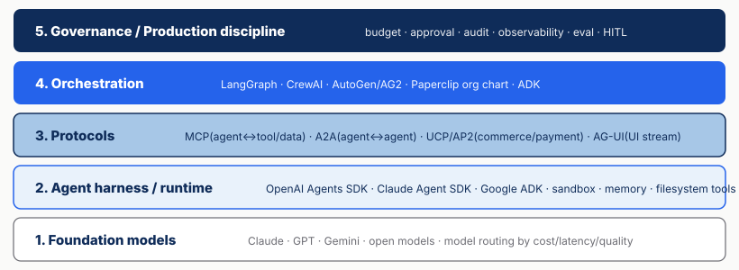
2026년 5월 기준 에이전트 생태계 스택. 모델 위에 실행 하네스, 프로토콜, 오케스트레이션, 운영 규칙이 쌓이는 구조다. 작성자 정리.1.2 핵심 흐름 5가지
본 절은 2026년 5월 현재 에이전트 생태계에서 중요한 5가지 흐름을 리포트 본문 안에서 독립적으로 읽히도록 정리한다. 별도 사전 자료를 읽지 않아도 이어지는 2장과 3장의 판단 근거가 되도록, 각 트렌드의 의미와 운영 자동화 관점의 함의를 함께 적는다.
1.2.1 에이전트 실행 하네스 경쟁 — 코딩 도구에서 업무 실행 환경으로
2025년의 코딩 에이전트는 주로 개발자 도구였다. 2026년에는 OpenAI Agents SDK · Claude Agent SDK · Google ADK 같은 하네스가 파일 시스템, 샌드박스, 메모리, 도구, 스킬, 패치, 장기 실행을 품으면서 업무 실행 환경 으로 확장되고 있다.[13][38]
OpenAI는 2026-04-15 Agents SDK 업데이트에서 설정 가능한 메모리, 샌드박스를 고려한 오케스트레이션, Codex식 파일 시스템 도구, MCP, skills, AGENTS.md, shell, apply_patch를 공통 구성 요소로 묶었다.[38] 핵심은 모델이 답변만 하는 것이 아니라, 통제된 작업공간에서 파일을 읽고 쓰고, 명령을 실행하고, 중간 상태를 복원하며, 여러 단계 작업을 이어 가는 실행 하네스 를 갖는다는 점이다. Anthropic도 Claude Code 기반 하네스를 Claude Agent SDK로 일반화하며 심층 리서치, 영상 제작, 노트 작성 같은 비코딩 작업을 강조한다.[13]
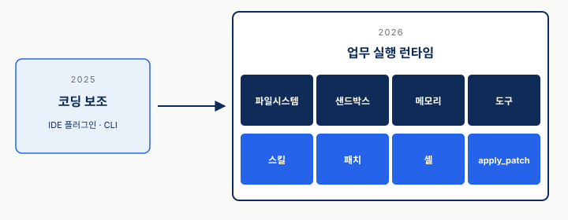
2025년의 코딩 보조 도구가 2026년에는 파일 시스템·샌드박스·메모리·도구·스킬·패치·셸을 포함한 업무 실행 환경으로 확장되는 흐름. 작성자 시각화.왜 중요한가 — "코딩 에이전트 = 개발자 전용"의 구도가 깨지고 있다. Excel · PDF · PPT · 운영 문서 · 광고 리포트처럼 파일 기반 작업이 많은 마케팅/기획 업무도 같은 하네스 위에 올라갈 수 있다. 앞으로 프레임워크 선택은 단순히 "어떤 모델을 쓰나"가 아니라 어떤 작업공간, 샌드박스, 권한 경계, 재시도/복원 방식을 제공하나 의 문제가 된다.
1.2.2 MCP(Model Context Protocol)의 사실상 표준화
2024년 11월 Anthropic이 발표한 MCP가 18개월 만에 에이전트-도구/데이터 인터페이스의 사실상 표준 이 됐다. 공개 MCP 서버 레지스트리는 2025 Q1 1,200개 → 2026년 4월 9,400개+ 로 늘었고, Claude / ChatGPT / Gemini / Cursor / Windsurf / Zed / JetBrains AI / Vercel AI SDK / OpenAI Agents SDK가 모두 MCP를 네이티브로 채택했다.[8][9]
한 줄 정의 — AI를 위한 USB-C 포트. 어떤 어시스턴트·어떤 모델 패밀리도 어떤 데이터 소스·도구와 호환되도록 공통 어댑터 + 공통 프로토콜 을 마련한 것이 본질이다.[10] 전통 API와의 차이는 동적 발견(dynamic discovery) 이다. 에이전트가 실행 중 MCP 서버에 "너는 어떤 일을 할 수 있나?" 를 묻고, 서버가 돌려준 기능 목록에 맞춰 도구 사용법을 조정한다.
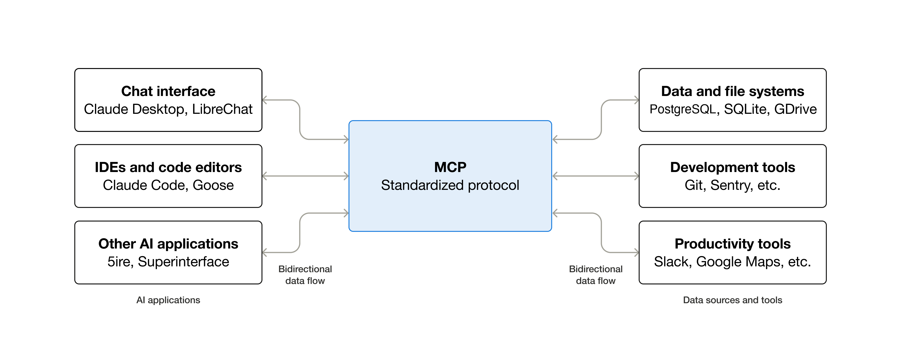
Anthropic 공식 MCP 다이어그램. 클라이언트(Claude/Cursor/IDE)와 데이터/도구/워크플로 사이를 표준 프로토콜 한 층이 매개. 출처: modelcontextprotocol.io.상용 운영에서 남는 위험 4개 — 여러 1차 출처가 공통으로 짚는 운영 위험은 다음이다.[9][10]
- 컨텍스트 폭주(Context pollution) — 범용 MCP 서버를 붙이면 함수 정의와 반환 데이터가 모델 컨텍스트를 빠르게 소모한다.
- 인증 / 원격 전송 복잡성 — 원격 MCP 서버는 HTTPS, SSE/Streamable HTTP, 인증 설정이 함께 필요하다.
- 품질 편차 — 서버 수가 빠르게 늘면서 권한 범위, 오류 처리, 로그, 데이터 반환 형태 검수가 필수다.
- 위험 행동(Destructive action) — 고객 데이터 삭제, 광고비 집행, 파일 삭제 같은 행동은 MCP 서버 쪽 허용 명령 목록과 승인 게이트가 필요하다.
MCP 공식 로드맵도 2026년 우선순위로 전송 확장성, 거버넌스 성숙도, 기업 도입 준비도를 잡고, 감사 로그, SSO 통합 인증, 게이트웨이 동작, 설정 이식성을 기업 채택 과제로 명시한다.[9] Docker MCP Gateway 같은 중앙 인증·시크릿 관리 패턴은 이 간극을 메우는 구현안 중 하나다.
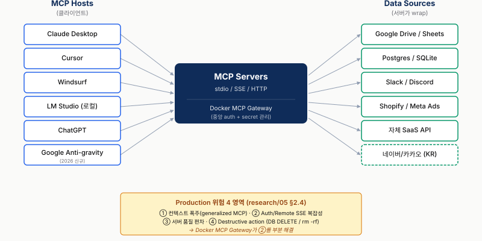
MCP 호스트(Claude Desktop/Cursor/Windsurf/LM Studio/ChatGPT/Google 계열 클라이언트) ↔ MCP 서버/Gateway ↔ 데이터 소스(Drive/DB/Slack/Shopify/자체 SaaS 등). 작성자 정리.운영 자동화 관점 — Shopify · Meta Ads · Instagram · GA4 · Slack 같은 외부 시스템은 MCP 서버를 한 번 만들어 두면 모든 에이전트가 함께 쓸 수 있다. 단 범용 MCP를 무작정 붙이면 컨텍스트 폭주가 곧 비용 폭주로 이어진다. 자체 자산은 목적이 좁은 전용 MCP로 정밀하게 만들고, 외부 SaaS는 게이트웨이 같은 통합 진입점을 거치는 패턴이 안전하다.
1.2.3 A2A와 프로토콜 계층화 — 도구 연결 다음은 에이전트 간 연결
MCP가 에이전트와 도구/데이터를 잇는 표준이라면, Google의 A2A(Agent2Agent) 는 에이전트와 에이전트를 잇는 표준을 겨냥한다. Google은 A2A를 2025-04-09 공개하면서, 서로 다른 벤더·프레임워크의 에이전트가 서로를 발견하고, 소통하고, 조율하도록 하는 공개 프로토콜이라고 설명했고, MCP를 보완한다고 명시했다.[36] 출시 시점에 Atlassian, Box, Cohere, MongoDB, PayPal, Salesforce, SAP, ServiceNow, Workday 등 50개 이상 파트너가 참여했다.[36]
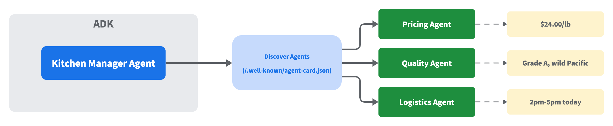
A2A Agent Card discovery. 각 원격 에이전트가/.well-known/agent-card.json에 이름·능력·endpoint를 노출하고, 호출 에이전트가 실행 중 적절한 전문 에이전트로 요청을 보낸다. 출처: Google Developers Blog.Google의 2026-03 Developer's Guide to AI Agent Protocols 는 MCP, A2A, UCP, AP2, A2UI, AG-UI를 경쟁 표준이 아니라 계층별 문제 해결 도구 로 정리한다.[37]
| 계층 | 해결하는 문제 | F&B/마케팅 예시 |
|---|---|---|
| MCP | 에이전트가 도구·데이터에 접근 | Shopify 상품 DB, GA4, Meta Ads, Slack |
| A2A | 에이전트가 다른 전문 에이전트를 발견·호출 | 가격 분석 agent, 재고 agent, 채널별 카피 agent |
| UCP/AP2 | 상거래·결제 흐름 표준화 | 식자재 주문, 쿠폰/결제 승인, 예산 한도 |
| A2UI/AG-UI | 결과 UI와 실시간 이벤트 | 캠페인 진행 대시보드, 승인 큐, 실시간 상태 |
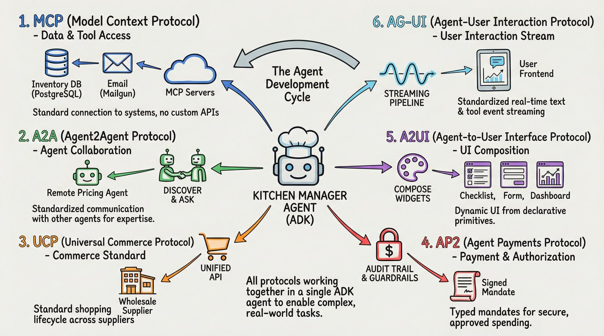
Google Developers의 restaurant supply-chain 예시. 한 에이전트가 MCP(재고 DB), A2A(가격·품질 전문 에이전트), UCP/AP2(주문·결제), A2UI/AG-UI(대시보드·실시간 UI)를 단계별로 사용한다. 출처: Google Developers Blog.왜 중요한가 — "MCP를 붙이면 멀티에이전트가 된다" 는 말은 절반만 맞다. MCP는 도구 접근을 표준화하지만, 서로 다른 전문 에이전트가 어떤 계약으로 요청을 주고받을지는 별도 문제다. 2026년의 표준화 경쟁은 MCP 단일 표준 이 아니라, 도구 / 에이전트 / 상거래 / 결제 / UI 로 나뉜 프로토콜 스택의 정리로 보는 편이 정확하다.
1.2.4 Agent Skills — 프롬프트 자산의 코드화
Anthropic이 2025-10 Agent Skills를 공개했고, 2025-12-18에는 여러 플랫폼에서 옮겨 쓸 수 있는 공개 표준으로 확장했다.[11][40] 폴더 하나에 SKILL.md(YAML frontmatter, 즉 파일 맨 앞의 구조화된 메타데이터 + Markdown 지시문)와 보조 스크립트/리소스를 담는 단순 포맷이다. 핵심은 단계적 로딩(staged loading) 이다. 부팅 시에는 스킬 이름·설명·호출 조건만 읽고, 실제로 필요할 때만 본문과 리소스를 컨텍스트에 올려 토큰 비용을 줄인다.
왜 중요한가 — 그동안 사내에 흩어져 있던 "ChatGPT 프롬프트 모음.docx" , "노션 프롬프트 라이브러리" 같은 비공식 자산이 버전 관리 가능한 코드 디렉토리 가 된다. 예를 들어 브랜드 톤 매뉴얼 / 캠페인 카피 SOP / 광고 캠페인 셋업 절차 를 각각 스킬 폴더로 묶으면, 같은 자산을 Claude Code · Cursor · Paperclip의 모든 에이전트가 똑같이 호출 가능하다.
초심자 관점에서는 Skills를 "프롬프트"보다 넓게 이해해야 한다. 실제로는 SOP + 예시 + 스크립트 + 템플릿 + 금지 규칙 을 필요할 때만 불러오는 능력 패키지로 묶는 방식이다. F&B 브랜드에서는 메뉴명 표기, 금지어, 가격/할인 정책, 브랜드 말투가 이 계층에 들어간다.
1.2.5 관찰성·평가·비용 — 운영 규칙의 표준화
에이전트가 실제 운영으로 들어가면서 "잘 돌아가는 것처럼 보이는가"보다 왜 그런 결정을 했는지 추적하고, 실패를 재현하고, 비용을 제어할 수 있는가 가 중요해졌다. LangChain 설문 기준 상용 운영 팀의 89%가 관찰성(observability)을 도입 했고, 62%는 단계별 실행·도구 호출 단위 추적을 본다. 오프라인 평가 도입률은 52.4%, 온라인 평가는 37.3%다.[1]
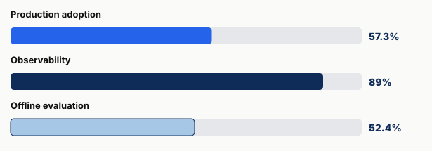
LangChain State of Agent Engineering 2025/2026의 주요 수치를 재구성. production adoption 57.3%, observability 89%, offline eval 52.4%, production blocker 1위 quality 32%. 작성자 시각화, 데이터 출처: LangChain.왜 중요한가 — 멀티 에이전트가 늘어날수록 "왜 이 캠페인 카피가 이렇게 나왔는지" 의 사후 추적성이 상용 운영의 사활을 가른다. LangChain 설문에서 상용 운영 진입을 가로막는 1위 이유가 품질(quality, 32%) 이었는데, 관찰성 없는 품질 개선은 불가능하다.[1] 10,000명 이상 대기업에서는 보안이 두 번째 우려로 올라와, 권한·감사·승인 정책이 오케스트레이션 설계의 일부가 된다.[1]
평가 영역에서는 코딩의 SWE-bench가 가장 흔히 언급되는 척도지만, 코딩 외 영역은 AgentBench / GAIA / TAU-bench / WebArena 같은 벤치마크가 있어도 합의된 표준은 아직 약하다.[17] 그래서 상용 운영의 핵심 질문은 "벤치마크 1등 모델은 무엇인가"가 아니라 우리 도메인의 단계별 실패율과 사람 승인 기준을 측정하고 있는가 다.
복리 오류는 이 문제를 직관적으로 보여 준다.[17]
- 단계당 90% × 5단계 = 59%
- 단계당 95% × 10단계 = 60%
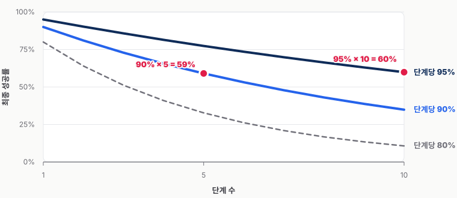
단계별 성공률이 높아 보여도 다단계 워크플로에서는 최종 성공률이 빠르게 떨어진다. 빨간 점은 90%×5단계=59%, 95%×10단계=60% 지점을 표시한다. 작성자 시각화.외부 발행·고객 접점·비용 집행처럼 5~10 단계가 직렬로 도는 워크플로에서는 단계별 95% 이상이거나 HITL 체크포인트가 반드시 끼어 있어야 한다.
비용도 같은 축이다. Claude Agent SDK · claude -p · GitHub Actions의 구독 토큰이 별도 크레딧 버킷으로 분리되는 정책 변화처럼, 사용량이 큰 에이전트 워크플로의 가격 모델은 계속 재편되고 있다.[14] 따라서 어댑터 단계에서 60/30/10 모델 라우팅 + Iceberg + Sub-agent isolation 같은 비용 인지형 설계를 기본값으로 두는 편이 안전하다.[17]
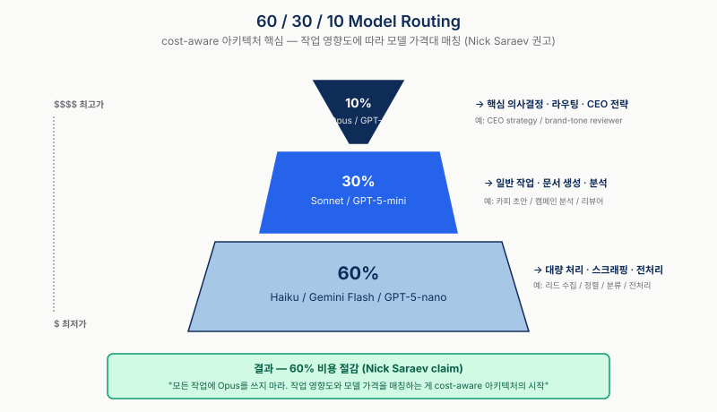
모델 가격대를 작업 영향도와 매칭. 60% Haiku/Flash (대량 처리) + 30% Sonnet (일반 작업) + 10% Opus (핵심 의사결정). 작성자 시각화.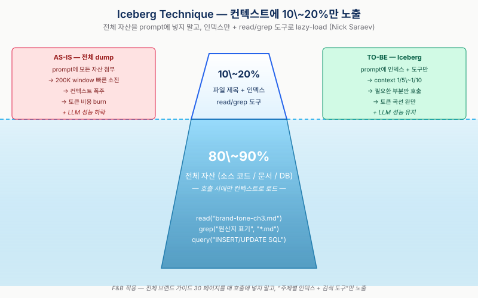
수면 위 10~20% (파일 제목 + read/grep 인덱스)만 매 프롬프트에 노출, 수면 아래 80~90% (전체 자산)는 도구 호출 시에만 불러온다. 작성자 시각화.1.3 운영 자동화 관점 — 논의거리 3가지
자세한 적용 논의는 5장에서 다루고, 여기서는 논의거리만 남긴다.
- 조직형 오케스트레이션의 자연스러움 — Paperclip식 조직도(org chart) + 예산·승인 라인 모델은 프로젝트 단위 산출물 + 사람 승인 + 비용 한도 가 함께 있는 업무에서 특히 강하다.
- MCP + A2A = 통합 ROI 최대 영역 — Meta Ads · GA4 · Instagram · Shopify · CRM · 사내 DB는 MCP로 감싸고, 가격/재고/카피/성과 분석 같은 전문 에이전트는 A2A식 계약으로 연결하는 구도가 자연스럽다.
- 브랜드 톤 = SKILL.md 로 자산화 — 브랜드 가이드라인 · 금지어 · 페르소나를 Agent Skill로 패키징하면 Claude · Cursor · Paperclip 어디서든 동일 톤이 강제된다. 흩어진 프롬프트 사이로 새는 일관성 문제의 구조적 해법이다.
2. 프레임워크는 패러다임이다 — 4-Way 분류
이 장의 한 줄 — 2026년의 에이전트 프레임워크 선택은 "어느 라이브러리가 좋은가" 가 아니라 "우리 워크플로의 모양이 무엇과 닮았는가" 를 묻는 문제다.
1장에서 본 것처럼 단일 모델 능력만으로 차이를 만들던 시기는 지나가고 있다. 2026년의 선택지는 "어떤 모델이 더 똑똑한가"보다 여러 호출·도구·사람 승인을 어떤 모양으로 엮을 것인가 에 가까워졌다. 본 장은 이 선택지를 그래프형 / 역할극형 / 스킬 중심 / 조직형 네 가지 사고 방식으로 정리한다.
이 4-way는 학술 분류를 그대로 옮긴 표가 아니다. Anthropic Building Effective Agents(2024)의 workflow 패턴[41], LangChain/LangGraph의 multi-agent 패턴[42][43], arXiv survey Multi-Agent Collaboration Mechanisms(2025)[44] 같은 통용 분류를 발표용 의사결정 언어로 단순화한 프레임이다. 출처와의 대응은 각 절에서 짧게 표시하되, 본문의 초점은 하나다. 우리 업무의 흐름이 어느 사고 방식과 가장 닮았는가.
2.1 그래프형 (LangGraph)
가까운 통용 분류 — Anthropic의 prompt chaining / routing / orchestrator-workers 같은 workflow 패턴[41]을 코드로 명시하기 좋은 쪽이다. LangGraph는 이를 state graph + node + edge 로 표현해, 실행 경로와 중단 지점을 사람이 추적할 수 있게 만든다.
사고 방식
그래프형(graph-based) 의 사고 방식은 상태 그래프(state graph) + 노드(node) + 엣지(edge) + 체크포인트(checkpoint) 다. 워크플로를 노드(에이전트 또는 도구 호출 한 단계)와 엣지(다음 노드로 가는 조건부 전이)로 명시적으로 그리고, 각 노드의 입출력은 공유 state 객체에 누적된다. LangGraph의 차별점은 노드 사이에 HITL(human-in-the-loop) 체크포인트 를 기본 기능으로 끼워 넣을 수 있다는 점이다. 특정 엣지에서 실행을 멈추고 사람 승인을 기다린 뒤 재개하는 패턴이 SDK 수준에서 지원된다.
구조 예시 (의사코드)
from langgraph.graph import StateGraph, END
graph = StateGraph(CampaignState)
graph.add_node("research", research_agent)
graph.add_node("draft", writer_agent)
graph.add_node("brand_review", human_approval) # HITL 체크포인트
graph.add_node("publish", publisher_agent)
graph.add_edge("research", "draft")
graph.add_edge("draft", "brand_review")
graph.add_conditional_edges(
"brand_review",
lambda s: "publish" if s.approved else "draft", # 반려 시 draft 재실행
)
graph.add_edge("publish", END)잘 맞는 워크플로
분기가 결정적(deterministic) 이고 단계 수가 미리 알려진 워크플로 — 예: 리서치 → 초안 → 검수 → 발행 처럼 노드 개수와 순서가 거의 고정된 파이프라인. 분기 조건을 코드로 명시할 수 있고, HITL 체크포인트가 자연스러운 자리에 들어가는 작업이라면 그래프형이 가장 추적성이 높다. 반대로, 단계 수 자체가 LLM의 판단에 따라 가변적이거나 발산적 토론이 필요한 작업에는 그래프가 폭발한다.
2.2 역할극형 (CrewAI, AutoGen)
가까운 통용 분류 — LangChain/LangGraph의 handoff 또는 swarm 계열[43], CrewAI의 role-based crew, AutoGen의 GroupChat처럼 누가 다음 발언권을 가져갈지 실행 중 정해지는 접근에 가깝다.
사고 방식
역할극형(role-playing) 의 사고 방식은 역할(role) + 대화(conversation) + 협상(negotiation) 이다. 각 에이전트는 직책(researcher / writer / critic 등)과 페르소나를 받고, 작업은 그들끼리 대화하는 과정 에서 산출된다. CrewAI는 이를 "process 기반 crew" 로 정형화하고, AutoGen / AG2는 GroupChat 추상으로 다자 대화를 핵심 기능으로 만든다. 흐름이 코드로 미리 그려지지 않고, 누가 언제 발언하는지는 매니저 또는 종료 조건이 실행 중 결정한다.
구조 예시 (YAML, CrewAI 스타일)
crew:
agents:
- role: trend_researcher
goal: 캠페인 소재 트렌드 5건 발굴
- role: copywriter
goal: 발굴 트렌드 기반 인스타 릴스 카피 3안 작성
- role: brand_critic
goal: 브랜드 톤 위반 항목 지적 + 반려/통과 판정
process: sequential # 또는 hierarchical (manager 지정)
tasks:
- description: 5개 트렌드 리서치
agent: trend_researcher
- description: 카피 3안 → critic 피드백 → 수정
agents: [copywriter, brand_critic]잘 맞는 워크플로
발산적 브레인스토밍, 다관점 검토, 합의 형성 이 본질인 작업 — 예: 캠페인 컨셉 발굴, 카피 A/B 후보 생성, 다관점 리뷰. 단계가 미리 정해져 있지 않고 "누가 무엇을 말하는가" 의 페르소나가 산출물 품질을 좌우하는 영역. 반대로, 산출물의 형태와 승인 라인이 명확히 고정된 운영 워크플로에는 대화형 구조가 과해질 수 있다. 수렴이 느리거나 무한 핑퐁이 발생하기 쉽다.
2.3 Skill 중심 (Deep Agents, Claude Agent SDK)
가까운 통용 분류 — Anthropic Agent Skills[11]와 Agent Skills open standard[40]가 이 흐름을 가장 선명하게 보여 준다. LangChain의 Skills 패턴처럼, 단일 에이전트가 통제권을 유지하면서 필요한 지식·절차·도구 설명을 필요할 때만 불러오는 방식이다.
사고 방식
스킬 중심(skill-based) 의 사고 방식은 도구 라이브러리(tool library) + 메인 루프(main loop) + 단계적 로딩(staged loading) 이다. 에이전트 1대가 큰 메인 루프를 돌리고, 작업에 필요한 능력은 사전에 작성된 SKILL.md 폴더(YAML frontmatter + 절차 지시문 + 보조 스크립트)에서 동적으로 꺼내 쓴다. 핵심은 단계적 로딩이다. 메타데이터만 부팅 시 로드되고, 본문은 실제 호출 시점에만 컨텍스트에 올라가서 토큰 비용을 줄인다 (1장 §1.2.3). 그래프나 대화가 흐름의 표현 이라면, 스킬 중심은 능력의 모듈화 다.
구조 예시 (디렉토리)
.claude/skills/
├── brand-tone/
│ ├── SKILL.md # 메타데이터 + 호출 트리거
│ ├── guidelines.md # 본문 (호출 시 로드)
│ └── forbidden.json
├── meta-ads-campaign/
│ ├── SKILL.md
│ └── setup.py # 보조 스크립트
└── instagram-reels/
└── SKILL.md# SKILL.md frontmatter 예시
---
name: brand-tone
description: 커넥트브릭 브랜드 톤·금지어·페르소나 강제
triggers: [copy_review, draft_writing]
---잘 맞는 워크플로
코딩, 문서 작성, RAG 중심 작업 — 단일 에이전트가 광범위한 도구·자산을 활용해 산출물을 만들지만, 호출되는 능력의 집합은 작업마다 달라지는 영역. 사내 자산(브랜드 톤, 카피 SOP, 캠페인 셋업 절차)이 코드 리포지토리에 버전 관리되어야 할 만큼 누적되어 있다면 강력하다. 반대로, 여러 에이전트가 병렬로 협업하면서 승인·예산을 공유해야 하는 운영 워크플로 에는 단일 메인 루프가 병목이 된다.
2.4 조직형 (Paperclip)
가까운 통용 분류 — LangChain/LangGraph의 supervisor 또는 hierarchical multi-agent 구조[42]와 닮았지만, 차이는 거버넌스다. supervisor가 주로 누구에게 일을 보낼지를 정한다면, 조직형은 예산 한도·승인 큐·감사 로그까지 런타임의 핵심 규칙으로 다룬다.
사고 방식
조직형(organization-based) 의 사고 방식은 회사(company) — 조직도(org chart) + 목표(goal) + 예산(budget) + 거버넌스(governance) 다. 에이전트는 "역할" 이 아니라 직책(role) + 보고 라인(reporting line) + 예산 한도(budget cap) + 승인 권한(approval scope) 을 가진 직원 으로 모델링되고, 일감은 회의·메시지가 아니라 이슈(issue) / 태스크(task) / 목표(goal) 라는 산출물 단위로 흘러간다. 결정적 차별점은 거버넌스를 실행 중 시스템이 강제한다는 점이다. 승인 큐에 걸린 전략은 단순 알림이 아니라, 미승인 시 하위 태스크 진행 자체를 시스템이 막는다. 예산도 80% 사전 경고 / 100% 강제 중단으로 추적되어 자동 일시정지를 건다.
3장에서 더 다룰 내용
본 패러다임의 8개 서브시스템, 하트비트 루프, executionPolicy, approval queue, 8차원 예산 추적의 구체 메커니즘은 본 리포트 3장 (Paperclip 심층 분석) 에서 별도로 다룬다. 본 장에서는 4분류 안에서의 위치, 즉 "거버넌스를 가장 앞에 두는 패러다임" 이라는 점만 명확히 해 두면 충분하다.
2.5 비교표 + 의사결정 가이드
4 패러다임 비교
| 차원 | 그래프형 | 역할극형 | Skill 중심 | 조직형 |
|---|---|---|---|---|
| 대표 | LangGraph | CrewAI, AutoGen | Deep Agents, Claude Agent SDK | Paperclip |
| 사고 방식 | 상태 그래프 + 노드/엣지 | 역할 + 대화 + 협상 | 도구 라이브러리 + 메인 루프 | 회사 + 조직도 + 예산 |
| 핵심 단위 | 노드(step) | 발언(turn) | skill 호출 | 이슈 / 태스크 |
| 흐름 표현 | 코드로 명시 | 실행 중 합의 | 메인 루프 + 동적 skill load | 보고 라인 + 위임 |
| 거버넌스 방식 | 엣지에 HITL 체크포인트 삽입 | 외부 래퍼 또는 critic 역할 | 사용자 코드에서 가드 | 실행 중 강제 (approval / budget hard-stop) |
| 잘 맞는 워크플로 | 결정적 분기 + HITL 파이프라인 | 발산적 브레인스토밍, 다관점 검토 | 코딩, 문서, RAG 중심 | 프로젝트 단위 + 승인 + 예산 한도 |
| 상태 영속성 | 체크포인트 저장소 (Redis/PG) | 대화 로그 | 메인 루프 메모리 + 외부 저장소 | DB 기반 (조직 / 이슈 / 트랜잭션) |
조직형이 자연스러운 업무 조건 (가설)
조직형 오케스트레이션이 자연스러워지는 구조적 특징 을 단순화하면 다음 4가지다.
- 프로젝트 단위 산출물 — 결과물의 단위가 명확하다 (이슈에 가까움, 노드 시퀀스에 가깝지 않음).
- 사람 승인 라인 — 외부 공개·고객 전달·비용 집행 전 사람이 반드시 들여다본다 (단순 알림이 아닌 런타임 차단 이 필요).
- 예산 한도 — 모델 비용, 광고비, 외부 SaaS 비용처럼 한도 초과가 조직 정책 위반 이다 (시스템이 강제해야 함).
- 여러 에이전트의 동시 진행 — 작성 · 리서치 · 검수 · 발행이 병렬로 돌면서도 같은 기준과 같은 예산 풀을 공유해야 한다.
이 4가지를 어떤 패러다임의 사고 방식이 1:1로 받아내는가 를 물어보면, 그래프형은 1번에는 강하지만 2~4번이 외부 래퍼(wrapper)에 맡겨지고, 역할극형은 4번을 자연스럽게 받지만 2번·3번이 대화 합의 로 흐려진다. 스킬 중심은 1번 단일 산출물에는 강하지만 4번 병렬 협업이 단일 메인 루프 안에 갇힌다. 조직형은 4가지가 각각 이슈 / 승인 큐 / 예산 한도 / 조직도 로 시스템의 핵심 요소가 된다.
이것이 본 세미나의 핵심 가설이다. 프로젝트 산출물·승인·예산·병렬 협업 이 동시에 있는 업무는 조직형 사고 방식과 형태가 맞는다. 단, 이는 작성자(송태영)의 가설이며 단정이 아니다. 본 세미나 Q&A에서 청중(커넥트브릭 개발팀)이 가진 실제 워크플로 모양 을 들어 검증·반박하는 것이 목적이다.
본 분류의 위상 — 발표용 판단 프레임
본 4-way 분류는 "정답 분류표" 가 아니라 발표용 사고 방식 프레임이다. 같은 영역을 다른 축으로 자르는 통용 분류는 다음과 같다. 각각 본 4-way와 직교하거나 일부만 겹친다.
- Andrew Ng(2024) 의 4 design patterns[19] — reflection / tool use / planning / multi-agent. 흐름 패턴 차원.
- Anthropic(2024-12) — Building Effective Agents [41] — prompt chaining / routing / parallelization / orchestrator-workers / evaluator-optimizer + workflows vs agents. 코드 구조 차원.
- LangGraph 공식 architecture[42][43] — network / supervisor / hierarchical multi-level / swarm. 제어 위상 차원.
- arXiv 2501.06322 survey[44] — actors / types / structures / strategies / coordination protocols. 학술 5축 분류.
- Turing[7]·pecollective[6]·Morphllm[18] — 6~8개 프레임워크 매트릭스. 기능 비교 차원.
본 4-way는 그중 "우리 워크플로의 모양과 사고 방식의 형태가 맞는가" 라는 단일 축으로 단순화한 것이다. 다른 축, 예를 들어 거버넌스 / 비용 / 관찰성 / UX까지 같이 보면 다른 그림이 나온다. 본 리포트 3장과 5장에서 이 축들을 보강한다.
2.6 실무 보정 — 실제 운영은 하이브리드다
마지막으로 한 가지를 분명히 해야 한다. 실제 상용 운영 시스템이 위 네 칸 중 하나에 깔끔히 들어가는 경우는 드물다. 4-way는 처음 설계를 어디서 시작할지 를 정하는 프레임이지, 최종 아키텍처의 이름표가 아니다.
실무에서는 보통 다음 보정이 들어간다.
- 시각 워크플로 도구 — n8n, Make, Zapier 같은 도구는 개발자가 아닌 운영자에게 강하다. 카피 발행, 이메일 온보딩, 리드 수집처럼 결정적이고 반복적인 파이프라인은 코드형 그래프보다 시각 도구가 더 빨리 정착할 수 있다.
- 개발자용 에이전트 플랫폼 — Google Antigravity 같은 도구는 노코드 자동화보다는 개발자 워크스페이스에서 여러 에이전트를 실행·검증·관찰하는 쪽에 가깝다. n8n류와 같은 칸에 넣기보다, 에이전트 실행 하네스와 오케스트레이션 UI의 결합으로 보는 편이 정확하다.
- 도메인 맞춤형 구조 — LangChain의 multi-agent 가이드가 강조하듯, 실전에서는 subagents / handoffs / skills / router / custom workflow를 섞는다.[17] 예를 들어 조직형 뼈대 위에 작성 단계는 역할극형으로, 브랜드 톤은 스킬 중심으로, 승인 라인은 그래프형 체크포인트로 붙일 수 있다.
따라서 Session 2의 질문은 "네 패러다임 중 하나를 고르자" 가 아니다. 더 정확한 질문은 다음이다.
우리의 기본 뼈대는 무엇이고, 어느 단계에 다른 패턴을 섞어야 하는가?
본 세미나는 이 질문에 대한 가설로 조직형 뼈대 + 스킬 자산 + 명시적 승인 게이트 를 제안한다. 다만 이는 정답이 아니라 출발점이다. 실제 판단은 커넥트브릭의 업무 시나리오, 승인 책임, 채널 운영 방식, 비용 한도를 놓고 Session 2에서 다시 검증해야 한다.
3. Paperclip 자세히 보기 — 아키텍처와 거버넌스
2장에서 본 4 패러다임 중, "조직형(organizational)" 의 대표 사례인 Paperclip을 조금 더 자세히 살펴본다. 본 장의 목적은 두 가지다. (1) 8개 서브시스템 위에서 하트비트 루프(heartbeat loop) 가 어떻게 일을 돌리는지 코드 레벨 직전까지 그려보고, (2) 거버넌스(governance)가 단순 알림이 아니라 실행 중 시스템이 강제하는 차단(runtime-enforced gating) 으로 동작한다는 점을 보인다.
3.1 한 줄 정의 + 슬로건
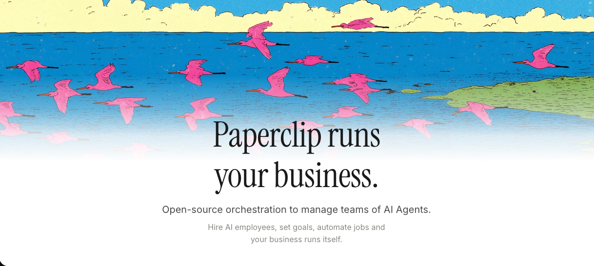
paperclipai/paperclip GitHub README 헤더. 회사·에이전트·운영 메타포가 시각적 정체성의 핵심. 출처: github.com/paperclipai/paperclip.Paperclip은 "AI 에이전트 팀을 회사처럼 운영하는" 오픈소스 오케스트레이션 플랫폼(orchestration platform) 이다. Node.js 서버 + React UI + PostgreSQL 위에 하트비트(heartbeat) 기반 작업 큐와 8개 서브시스템을 얹어 외부 에이전트 실행 환경(Claude Code, Codex, CLI, HTTP, Plugin)을 한곳에서 관리한다.[20][21]
제작자의 공식 표현이 본 장의 한 줄 메시지를 가장 잘 요약한다.[20]
"If OpenClaw is an employee, Paperclip is the company."
곧 Paperclip은 "더 똑똑한 한 명의 에이전트" 를 만드는 도구가 아니라, "여러 에이전트가 일하는 회사라는 운영 틀" 을 제공하는 도구다. 이 관점이 다른 패러다임과의 차이를 가른다.
3.2 8 서브시스템 아키텍처
Paperclip의 시스템 다이어그램은 React UI ↔ Node.js API 서버를 중심으로 8개 서브시스템이 PostgreSQL과 외부 어댑터를 함께 사용하는 구조다.[20][21]
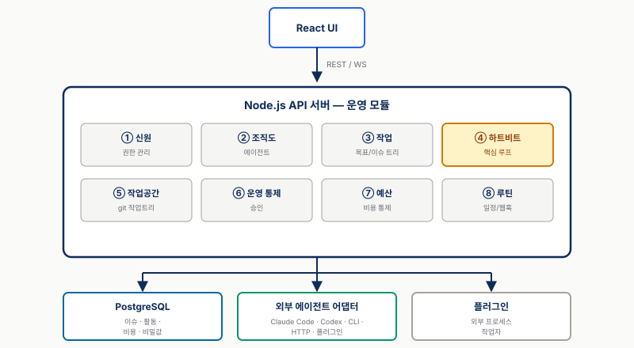
React UI 가 REST/WS 로 Node.js API 서버와 통신, 서버 내부에 8개 서브시스템 (④ Heartbeat 가 핵심 루프) 이 동거. 서버는 PostgreSQL (issues/activity/cost/secrets), 외부 에이전트 어댑터 (Claude Code/Codex/CLI/HTTP/Plugin), Plugins (out-of-process workers) 와 연결. 작성자 시각화.8개 서브시스템은 다음과 같다.[20]
| # | 서브시스템 | 역할 |
|---|---|---|
| ① | Identity & Access | board user / member / agent 식별과 권한 |
| ② | Org Chart & Agents | 조직도, 에이전트 정의(role, reportsTo, budget, adapter) |
| ③ | Work & Task | Goal → Issue 트리, blocker, assignee, work products |
| ④ | Heartbeat Execution | DB 기반 wakeup 큐 + atomic checkout + adapter 호출 (핵심 루프) |
| ⑤ | Workspaces & Runtime | git worktree 기반 격리 작업 공간 |
| ⑥ | Governance & Approvals | approval queue + execution policy |
| ⑦ | Budget & Cost Control | 8차원 cost 추적 + 80% / 100% threshold |
| ⑧ | Routines & Schedules | cron / webhook / API 트리거 |
데이터 모델의 골격은 Company → Project → Goal → Issue 4계층이며, Issue 한 건이 "더 쪼개지지 않는 작업 단위(atomic work unit)" 다.[20][21]
Company (격리 단위, deployment당 무제한, export/import 가능)
├── Board Users / Members
├── Agents (role, title, reportsTo, budget, adapter)
├── Projects → Workspaces (isolated git worktree)
└── Goals (mission tree)
└── Issues (= 티켓, 원자 작업 단위)
├── company_id / project_id / goal_id / parent_id
├── blockers[] (의존성), assignee (Agent)
├── execution_lock (atomic checkout)
├── comments, attachments, work_products
└── activity[] (immutable audit log)여기서 핵심 원칙은 특정 모델이나 에이전트에 묶이지 않는다는 점이다. "If it can receive a heartbeat, it's hired" 라는 공식 문구가 이를 압축한다.[20]
3.3 Heartbeat 루프 — 핵심 실행 모델
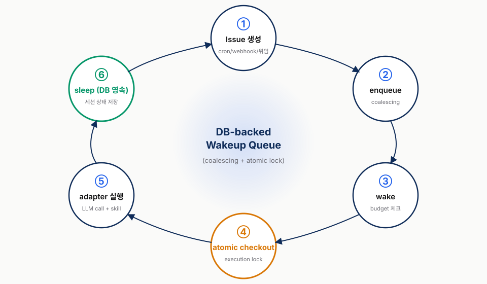
Issue 생성 → enqueue → wake → atomic checkout(execution lock) → adapter 실행 → sleep (DB 영속). 하나의 issue는 한 번에 한 에이전트만 맡는다 ("no double-work, no runaway spend"). 다음 박자에서 대기 중이던 에이전트가 같은 task context로 다시 깨어난다 (persistent agent state). 작성자 시각화.Paperclip의 모든 일은 하트비트 한 박자(one heartbeat) 위에서 도는데, 이는 다른 패러다임의 "continuous agent loop" 와 결정적으로 다르다. 한 박자의 라이프사이클은 다음과 같다.[20][21]
1. Issue 생성 (수동 / Routine cron·webhook·API / 다른 에이전트 위임)
→ company / project / goal / parent 링크 부여 (goal ancestry 결정)
2. DB 기반 wakeup queue에 enqueue (coalescing으로 중복 병합)
3. 하트비트 도착 → Budget check → Workspace resolve (git worktree)
→ Secret injection (필요 시만) → Skill loading → Adapter 호출
4. Atomic checkout — 실행 lock ("no double-work, no runaway spend")
5. 에이전트 실행 → 구조화 로그 / cost 이벤트 / 세션 상태 / 감사로그
6. work products 첨부, issue 상태 갱신, (옵션) Governance 승인 게이트세 가지 의미가 두드러진다.
첫째, atomic checkout + execution lock. 한 issue는 한 번에 한 에이전트만 잡는다. 공식 README는 이를 "no double-work, no runaway spend" 라는 문구로 설명한다.[20] 동일 issue를 두 에이전트가 동시에 가져가 같은 비용을 두 번 태우는 사고를 시스템 레벨에서 차단한다.
둘째, goal ancestry로 컨텍스트 상속. 에이전트는 "왜 이 일을 하는가" 를 자기 정의(role/budget/permissions) + 조직 컨텍스트(reporting line/회사 미션) + 작업 컨텍스트(issue + parent + blockers + 첨부) + 세션 컨텍스트(이전 하트비트 상태)를 함께 받아 안다.[20]
Company Mission → Project Goal → Parent Issue → Sub-issue / Agent셋째, 세션 영속성(session persistence). 하트비트 사이에 에이전트는 상태를 잃지 않고 대기한다. 다음 하트비트에서는 DB에 적재된 상태를 그대로 이어 받는다. Paperclip 문서는 에이전트가 매번 처음부터 시작하지 않고 같은 작업 맥락을 이어받는다고 설명한다.[20] 큐 자체도 DB 기반이라 서버 재시작 후 복원된다.
3.4 Org Chart + 위임 모델
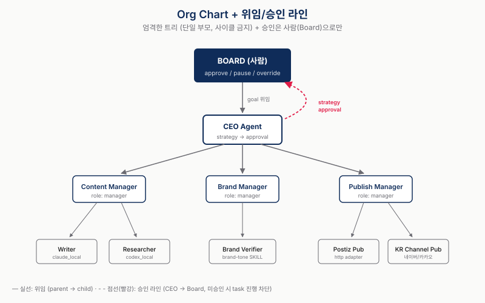
엄격한 트리: Board(사람) → CEO Agent → Content/Brand/Publish Manager → Workers (Writer/Researcher/Brand Verifier/Postiz Pub/Channel Pub). 실선은 위임, 빨간 점선은 승인 라인(CEO → Board). 미승인 시 하위 task 진행이 차단된다. 작성자 시각화.조직도는 엄격한 트리(strict hierarchy) 다.[21]
- 모든 에이전트는
reportsTo필드를 갖고, 정확히 한 명의 매니저 에게 보고한다. 사이클 금지(acyclic), 단일 부모. - 루트는 CEO 에이전트 — CEO만 사람(board operator)에게 직접 보고한다.
- 각 에이전트는 자신의
chainOfCommand를 갖고, 에스컬레이션(블로커가 생기면 매니저에게 재배정) · 위임(매니저가 하위 에이전트에게 subtask 생성) · 가시성(매니저가 하위 작업 조회) 세 용도로 쓴다. - 교차팀 작업(cross-team work)은 허용되지만, 보고 라인 밖의 태스크를 받은 에이전트는 그것을 취소할 수 없고 자기 매니저에게 재배정해야 한다.[21]
에이전트 한 명의 정의는 6개 필드로 압축된다.[21]
| 필드 | 예 |
|---|---|
| Name | "CEO", "Frontend Engineer" |
| Role (string slug) | ceo, cto, manager, engineer, researcher 등 |
| Reports to | 매니저 에이전트 ID |
| Adapter type + config | claude_local, codex_local, opencode_local, openclaw_gateway, http, process |
| Capabilities | 짧은 자연어 설명 |
| Budget | 월간 cent 단위 한도 |
여기서 중요한 관찰은 role이 enum이 아니라 자유 문자열 슬러그 + capabilities 자연어 조합 이라는 점이다. 즉 Content Strategist / Editor / Publisher 같은 마케팅 특화 템플릿은 현시점에 기본 제공되는 고정 직무가 아니라, 사용자가 조직도 안에서 직접 이름 붙이고 설명하는 직무다.[21]
3.4.1 필요 시 채용(Hire-on-Demand) 패턴
구조 자체는 정적(트리, 단일 부모, 사이클 금지)이지만 인원 구성은 동적 이다. CEO가 작업이 더 필요해지면 hire_agent approval을 보드(사람)에게 제출하고, 승인되면 새 에이전트가 트리에 붙는다. 이것을 필요 시 채용(Hire-on-Demand) 패턴으로 부른다.[21]
위임 라이프사이클을 한국어 흐름으로 풀면 다음과 같다.[21]
사람이 회사 목표를 등록
→ CEO 에이전트가 다음 하트비트에서 깨어남
→ CEO가 전략안을 만들고 사람 승인 요청을 생성
→ 사람이 전략안을 승인
→ CEO가 목표를 태스크로 쪼개 하위 에이전트에게 위임
→ 하위 에이전트가 배정 이벤트로 깨어남
→ 하위 에이전트가 작업을 실행하고 상태를 업데이트
→ CEO가 진행 상황을 모니터링하고, 막힌 작업을 풀거나 상위로 에스컬레이션
→ 사람은 대시보드와 활동 로그에서 결과를 확인핵심 불변 조건(invariant)은 한 줄이다. 모든 태스크는 부모 계층을 따라 최초 목표까지 거슬러 올라갈 수 있어야 한다. 이 조건이 있어야 에이전트가 "왜 이 일을 하는가" 를 잃지 않는다.[21]
3.5 거버넌스 — 실행 중 강제
본 장의 메시지 중 가장 결정적인 부분이다. Paperclip의 거버넌스는 두 축이 실행 중 작동 한다. (A) 회사 레벨의 Approval Queue, (B) 태스크 레벨의 Execution Policy.[21]
3.5.1 (A) Approval Queue — 회사 레벨
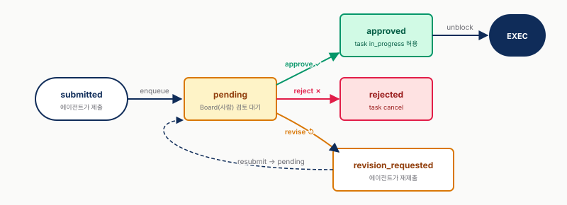
submitted → pending → approved/rejected/revision_requested → resubmitted → pending. 미승인 시 CEO는 하위 task를 in_progress로 못 옮김 (단순 알림이 아닌 차단). 작성자 시각화.hire_agent 와 ceo_strategy 두 가지가 명시적 승인 타입이다.[21]
pending → approved
→ rejected
→ revision_requested → resubmitted → pending운영자는 Approvals 페이지에서 (1) 요청자 / 사유, (2) 연관 이슈, (3) 전체 요청 내용(예: 신규 에이전트 설정 전체)을 보고 결정한다. 승인 전엔 CEO가 태스크를 in_progress로 못 옮긴다. 곧 미승인은 단순 알림이 아니라 진행 자체의 차단이다.[21]
3.5.2 (B) Execution Policy — 태스크 레벨
이슈마다 선택적으로 붙는 executionPolicy 객체로, 세 계층을 조합한다.[21]
| Layer | 목적 | 스코프 |
|---|---|---|
| Comment required | 모든 에이전트 run은 이슈에 코멘트를 남겨야 함 | 런타임 불변량(항상 on) |
| Review stage | 리뷰어가 품질/정확성 확인, 변경 요청 가능 | 이슈별 옵션 |
| Approval stage | 매니저/스테이크홀더 최종 승인 | 이슈별 옵션 |
조합 가능 — review만 / approval만 / review→approval 순차 / 둘 다 없이 comment-only. 실행 중 시스템이 강제 하는 게 핵심이다. 에이전트가 "리뷰를 잊을" 가능성을 시스템이 차단한다.[21]
3.5.3 보드의 개입 권한 (Board Override Powers)
운영자(보드)는 언제든 다음을 할 수 있다.[21]
- 에이전트 pause / resume / terminate(영구, 비가역)
- 어떤 태스크든 다른 에이전트로 재배정
- budget 한도 override
- 승인 플로우를 우회해 에이전트 직접 생성
곧 자율 실행 위에 사람이 언제든 개입할 수 있는 비대칭 권한이 존재한다. 거버넌스의 안전망이 "시스템 강제 + 사람의 최종 개입권" 이라는 이중 구조다.
3.6 예산 거버넌스
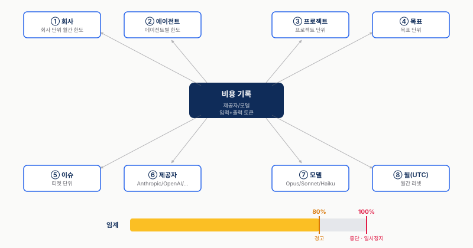
매 heartbeat가 cost event 발행 → 8 차원(company/agent/project/goal/issue/provider/model/month)에 동시 집계 → 80% 사전 경고 / 100% 강제 중단(auto-pause + 큐 cancel). 한계: 일/분 단위 budget 없음 → adapter 사전 제한 필요. 작성자 시각화.비용은 8개 차원 으로 추적된다 — company · agent · project · goal · issue · provider · model · 월별 UTC 집계. 각 하트비트가 cost event를 보고하며, 필드는 provider / model / inputTokens / outputTokens / costInCents 다.[21]
정책은 단순 명료한 두 임계다.[21]
| 임계값 | 동작 |
|---|---|
| 80% | 소프트 알림 — 에이전트에게 중요 작업만 집중하라고 경고 |
| 100% | 하드 중단 — 에이전트 자동 일시정지, 추가 하트비트 중단 |
- 단위: cent 단위 USD (예: 회사 예산 100,000 cents = $1,000/월; 에이전트 5,000 cents = $50/월).
- 100% 도달 시 에이전트 자동 paused + 큐잉된 작업도 자동 cancel.
- 복구는 budget을 올리거나 다음 캘린더 월(UTC) 도래까지 대기.
- 운영자는 budget을 override할 권한이 있다.
3.6.1 단점 — 일/분 단위 예산 없음
여기서 한 가지 한계가 분명하다. 일 단위 / 분 단위 budget은 존재하지 않는다. 월간(UTC) 단위만 있다.[21] 단기 사용량 급증을 막는 힘이 약하다는 뜻이다. 단일 하트비트 안에서 토큰이 폭발하면 직후에야 차단되며, 한 번의 급증으로 발생한 손실은 막지 못한다.
운영 측면에선 다음 보완이 필요하다.
- 자체 사전 제한(adapter 단에서 per-call max_tokens 등) 병행
- 일간 알림을 routine으로 합성(예: 매일 09:00 회사 지출 점검 routine)
3.6.2 어댑터 단계의 비용 패턴 — Paperclip 거버넌스 위에 더할 3가지
§1.2.7에서 풀었던 3가지 패턴이 그대로 Paperclip의 adapter 레이어에 들어간다. Paperclip의 hard-stop이 "한도 도달 후 차단" 이라면, 다음은 "한도에 가까이 가지 않게 만드는" 사전 설계다.
| 패턴 | Paperclip 위에서의 위치 | 효과 |
|---|---|---|
| 60/30/10 model routing | adapter config의 model 필드를 역할별 분기 — CEO/리뷰어는 Opus, 일반 작업자는 Sonnet, 데이터 수집·전처리는 Haiku |
회사 단위 지출 곡선을 ~60% 완만하게 |
| Iceberg Technique | skill 폴더 안에 전체 자산이 아닌 인덱스 + read/grep — 브랜드 가이드·캠페인 히스토리도 전체 원문 대신 검색 가능한 인덱스로 제공 | 매 heartbeat의 prompt 길이를 1/5~1/10로 |
| Sub-agent context isolation | Paperclip atomic checkout이 이미 issue 단위 isolated workspace 를 강제 — 패턴 자체는 시스템에 내장, 명시적 활용 만 운영자가 챙기면 됨 | 메인 컨텍스트 오염 방지 |
세 패턴이 모두 적용된 상태에서 그래도 사용량 급증이 일어나면 §3.6의 8차원 추적 + 100% hard-stop이 마지막 안전망이 된다. 이런 이중 구조 가 안전한 상용 운영 형태다.
3.7 운영 위험 vs Paperclip 안전망
운영 의사결정 관점에서 보면, Paperclip이 직접 막아 주는 것 과 여전히 사람이 책임져야 하는 것 을 분리하는 표가 가장 유용하다.
| 위험 | Paperclip 대응 | 잔여 위험 |
|---|---|---|
| 비용 폭주 | 80% 사전 경고 / 100% 강제 중단, 8차원 추적 | 일/분 budget 없음 → 단기 사용량 급증 (확인) |
| 중복 작업 / 경쟁 조건 | 이슈 atomic checkout + execution lock | — |
| 컨텍스트 손실 / 세션 리셋 | persistent agent state, 하트비트 간 task 컨텍스트 유지 | 모델 context window 한계는 별개 |
| 에이전트 무한 루프 | heartbeat 모델 자체가 wake → act → sleep + budget hard-stop | 한 heartbeat 내부 루프는 adapter 책임 |
| 무단 결정 (전략·채용) | CEO strategy / hire 둘 다 board approval 필수 | "통째 승인" 패턴에 빠지면 거버넌스 무력화 |
| 품질 누락 (리뷰 스킵) | execution policy review / approval stage 실행 중 강제 | 리뷰어가 다른 에이전트면 환각이 다음 단계로 전파될 수 있음 |
| 감사 추적성 | 모든 mutation activity log + tool-call tracing | 로그 신뢰성은 OK, 모델 출력 진실성은 별개 |
| 할루시네이션 / 사실 오류 | 직접 차단 메커니즘 없음 — review stage 사람 강제만 가능 | 본질적 잔여 위험 (확인) |
| 브랜드 / 평판 리스크 | 가시성·중단 권한만 제공 | 외부 공개물처럼 톤이 결정적인 업무는 최종 검수 책임자 필수 (추정) |
| 외부 비용 (SaaS·인프라) | 토큰/모델 비용만 추적 | 별도 회계 필요 |
| 모델 다운 / 장애 | 고아 실행(orphaned run) 복구 메커니즘 제공 | 외부 API·모델 제공사 장애 범위는 별도 모니터링 필요 |
표의 메시지를 한 줄로 압축하면 — Paperclip은 "조직 운영의 구조적 안전망" 을 제공하지만, "모델 출력의 진실성" 은 보장하지 않는다. 후자는 최종 검수 책임자(사람 또는 검증 에이전트)를 execution policy로 강제하는 책임이 운영자에게 남아 있다.
3.7.1 4가지 실패 패턴 — Paperclip이 직접 못 막는 것
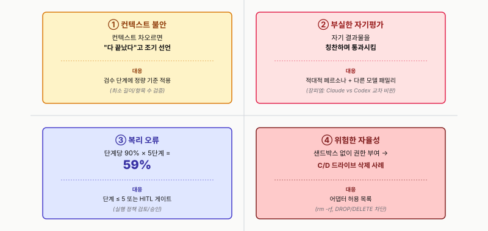
2×2 quadrant: 좌측은 컨텍스트/평가 (모델 인지) 영역, 우측은 권한/규모 (시스템 권한) 영역. ① Context Anxiety (조기 종료 선언) · ② Poor Self-eval (자기 칭찬 통과) · ③ 복리 오류 (90%×5단계 = 59%) · ④ 위험한 자율성 (C/D 드라이브 삭제). 시스템 거버넌스(Paperclip) + 모델 행동 가드레일(adapter/skill)의 이중 구조 필요. 작성자 시각화.위 표가 시스템 차원의 안전망 vs 잔여 위험 의 매핑이라면, 본 절은 에이전트 자체의 행동에서 생기는 4가지 실패 패턴 이다. 이 패턴은 시스템 거버넌스만으로 막기 어렵고 에이전트 설계와 검수자 룰북 으로 막아야 한다.[22]
(a) Context Anxiety — "다 끝났다"고 조기 선언 . 컨텍스트가 차오르면 에이전트가 작업이 덜 끝났음에도 마무리 지으려는 행동 변화 가 나타난다. 본 세션 Paperclip 데모의 Writer 에이전트가 드래프트가 아직 부족한데도 stage 전환을 요청하는 시나리오 가 이에 해당한다. Paperclip의 execution policy review stage는 전환을 강제 하지만 완성도를 판정하지는 못한다. 대응 — review stage에 "최소 길이/항목 충족 여부" 같은 정량 기준을 검증 에이전트로 넣는다.
(b) Poor Self-evaluation — 형편없는 결과를 칭찬하며 통과 . 자기 결과물 검토를 시키면 LLM이 자기 출력을 좋게 평가 하는 편향이 강하게 나타난다. 카피라이팅 → 카피라이터 자기 검수 → 통과 같은 구조가 위험한 이유다. 대응 — 평가자 에이전트는 비판적인 페르소나 + 분리된 컨텍스트, 가능하면 다른 모델 패밀리 로 둔다. 장피엠의 Claude vs Codex 교차 비판 패턴이 이 문제의 실무적 답이다(§5.3 참고).
(c) 복리 오류 (Compounding Errors) — 단계당 90% × 5단계 = 59% . 다단계 자율 실행은 각 단계의 정확도가 높아 보여도 누적되면 상용 운영 신뢰성에 미달한다.[22] 외부 발행처럼 5~10 단계가 직렬로 도는 워크플로는 단계별 95% 이상이거나 HITL 체크포인트가 반드시 끼어 있어야 한다. Paperclip의 executionPolicy review/approval stage가 바로 이 자리에 끼어들 수 있는 자리다 — 비싼 액션(외부 publish, 결제) 직전마다 강제 게이트.
(d) 위험한 자율성 방치 — 샌드박스 없이 파일 시스템·DB·외부 서비스 권한을 넓게 주면, 에이전트가 실수로 되돌리기 어려운 작업을 실행할 수 있다.[22] Paperclip의 atomic checkout이 작업 격리 는 보장하지만 위험 행동 권한 자체 는 adapter에 위임된다. 대응 — adapter 단에 capability allowlist + 위험 행동 차단 (rm -rf 패턴, DB DELETE 명령 등) 을 넣는다. 외부 발행 · 광고비 집행 · 고객 DB 변경 같은 행동이 위험 행동 후보다.
본 4가지 패턴은 §3.5의 실행 중 강제 거버넌스 와 별개의 문제다. "승인 받았어도 모델이 거짓 보고하면 게이트가 의미 없다" 가 이 절의 메시지다. 시스템 거버넌스 + 모델 행동 가드레일 의 이중 구조가 상용 운영 안전성의 필수 조건이다.
3.8 결론 — 조직형은 거버넌스를 시스템에 박는다
본 장의 결론을 한 줄로 응축하면 이렇다 — 거버넌스는 문서가 아니라 실행 중 시스템이 강제하는 규칙이어야 한다.
이 명제가 다른 패러다임과 결정적으로 갈리는 지점은 다음 셋이다.
- 승인은 알림이 아니라 차단이다.
hire_agent/ceo_strategyapproval queue는 단순 알림이 아니라 미승인 시 태스크 진행 자체를 막는다.[21] 다른 패러다임은 "approve 함수를 호출 안 하면 그냥 안 부르는" 수준에 가깝다 — 즉 거버넌스가 사용자의 자율 규율에 맡겨진다. - 품질 게이트는 이슈 수준에서 작동한다.
executionPolicy의 review/approval stage가 이슈 수준에서 작동하므로, "에이전트가 잊을" 가능성을 시스템이 차단한다.[21] 코드형(skill-centric) 패러다임은 main loop 안의 tool call로 review를 흉내 낼 수 있지만, 그건 "에이전트가 자발적으로 호출했을 때만" 작동한다. - 예산은 자동 pause를 동반한다. 80% soft / 100% hard-stop이 8개 차원으로 추적되어 자동 pause + 큐 cancel까지 간다.[21] 다른 패러다임의 cost tracking은 "기록" 까지 가지만 "자동 중단" 까지 가는 경우는 드물다.
곧 다른 세 패러다임이 "어떻게 일하느냐(workflow)" 의 사고 방식이라면, 조직형(Paperclip)은 "언제 멈추게 할 것인가(stop rules)" 를 시스템에 넣어 둔 방식이다. 브랜드 톤 · 승인 책임 · 예산 한도 가 결정적인 업무에서는 후자가 차별점이 된다. 이는 본 리포트의 가설이며, 실제 워크플로 진단을 통해 검증되어야 한다.
다만 단정은 아니다. "실행 중 강제" 의 이점은 운영자가 그 거버넌스를 진지하게 운용할 때만 살아난다. "통째 승인" 패턴에 빠지면 형식만 남는다. Paperclip의 약속은 "강제할 수 있는 자리" 를 마련해 둔 것이지, "강제가 저절로 일어나는 것" 은 아니다.
4. 라이브 데모 워크스루
본 장은 세미나 중 20분간 진행되는 라이브 데모의 시나리오와 시연 항목을 정리한다. 데모 환경은 사전에 셋업된 Paperclip 로컬 인스턴스를 사용한다.
4.1 시나리오 정의 (Nevo David 파이프라인 모방)
데모는 Nevo David가 공개한 5-skill 마케팅 파이프라인을 Paperclip의 조직도(org chart) 위로 재구성한 참조 아키텍처(reference architecture)를 따른다.[25][26] 여기서 참조 아키텍처란 "그가 실제로 Paperclip을 썼다"는 뜻이 아니라, 공개된 도구 조합을 Paperclip 방식으로 재배치한 설계 예시라는 뜻이다.
[Goal] "이번 주 인스타 릴스 3개 발행"
↓
CEO 에이전트 → Strategy proposal (사람 승인)
↓
Content Strategist → 5개 후보 topic 제안 (Issue로 생성)
↓
Writer → 승인된 1건 스크립트 작성 (시연 중)
↓
Editor → 리뷰 단계(stage, execution policy 작동 시현)
↓
Publisher → Postiz 업로드 + 다채널 예약 (모의 처리)정정 노트 — Nevo David는 Paperclip의 실제 사용 사례로 확인된 인물이 아니라 Postiz(오픈소스 소셜 스케줄러)와 agent-media(UGC 비디오 CLI)의 창업자다.[26] 그의 공개 파이프라인은 Claude Code skills + Postiz CLI/MCP + agent-media MCP + n8n 조합으로 돌아간다. 따라서 본 데모는 "Nevo가 Paperclip을 쓴다"가 아니라 그의 도구 스택을 Paperclip 조직도 메타포로 묶은 참조 아키텍처 로 봐야 한다.
4.2 사전 셋업 상태 (데모 시작 전 화면)
라이브 시연의 첫 화면은 다음 상태로 고정한다.
- 회사:
Demo Marketing Co(단일 인스턴스) - CEO 에이전트: 1명, adapter는 Claude Code
- 하위 에이전트: 미할당 (Strategy 승인 후 자동 생성되는 흐름을 보여주기 위함)
- Budget: 회사 단위 80% 직전 상태로 인위적 셋업 — 6번 시연 항목에서 즉시 트리거 가능하도록 준비
- Activity log: empty
- Goal: 미할당 (데모 중 운영자가 등록)
- Approval queue: 비어있음
이 정적 frame은 청중에게 "지금부터 모든 이벤트가 라이브"라는 신호를 준다.
4.3 6 시연 항목 워크스루
시연 항목은 다음 6개로 구성한다.
1. Approval queue UI 조작 (2~3분) — 운영자(human-in-the-loop) 권한으로 로그인된 화면에서 Approval queue 패널을 연다. 비어있는 상태에서 시작해, 다음 단계에서 자동으로 항목이 쌓이는 흐름을 예고. 운영자 권한이 회사 전체 거버넌스 게이트 역할임을 한 문장 설명.
2. CEO Strategy 승인 → Subtask 자동 생성 (3~4분) — Goal 입력란에 "이번 주 인스타 릴스 3개 발행" 을 등록. CEO가 heartbeat 루프에서 Strategy proposal을 만들어 queue에 올리고, 발표자가 승인하면 Content Strategist / Writer / Editor / Publisher 4개 Subtask가 자동 생성·위임된다. 핵심 메시지인 "거버넌스는 런타임에서 강제되어야 한다"의 첫 증거다.
3. Writer 에이전트 실행 (heartbeat → execution lock) (3~4분) — Writer 상세 화면에서 heartbeat 카운터 증가와 execution lock 점유 모습을 노출한다. 동일 이슈에 다른 에이전트가 끼어들지 못하는 상호 배제(mutual exclusion)가 시각적으로 드러난다. Activity log에는 LLM 호출 + skill 호출이 실시간으로 추가된다.
4. Execution policy review stage 작동 (2~3분) — Writer draft 완료 시 이슈가 자동으로 review stage로 전환되고 Editor가 다음 heartbeat에서 픽업. 이 stage 전환은 prompt가 아닌 executionPolicy 설정으로 강제되어 에이전트가 "잊을" 가능성이 차단된다. 거버넌스가 단순 안내가 아니라 실행 규칙으로 작동한다는 직접 증거다.
5. Activity log 살펴보기 (2~3분) — 회사 단위 Activity log에서 1~4번 모든 이벤트(승인 / Subtask 생성 / heartbeat / LLM·skill 호출 / stage 전환)가 시간순으로 쌓인 모습을 보여준다. 감사 추적(audit trail)의 완결성. 고객에게 공개되는 결과물의 검수·승인 이력을 남기는 자산이라는 한 줄 코멘트.
6. Budget 알림 (80%/100% 시뮬레이션) (2~3분) — 사전 셋업이 80% 직전이었으므로 직전 LLM 비용이 누적되면 즉시 80% soft 알림 발생. 발표자가 한도를 더 낮춰 100% hard-stop을 트리거하면 진행 중 Subtask 자동 pause + 대기 큐 cancel. 8개 차원(company/agent/project/goal/issue/provider/model/UTC월) 추적의 의미 한 줄 정리.
합계: 약 14~20분. 시간 압박 시 6번 Budget 알림 시연을 짧게 처리하면 약 5분 절감 가능하다.
4.4 실제 시연 시 주의점 / Q&A 예상 질문
상급 청중에서 나올 가능성이 높은 5개 질문에 발표자 시드 답변을 미리 준비한다.
Q1. "Claude Code adapter 토큰 비용은?" — 데모 1회 기준 추정 1~3달러. heartbeat 루프가 자주 돌아 누적이 빠르므로 회사 단위 budget 한도가 필수다 (본 데모 6번 시연이 그 답이다).
Q2. "상용 운영에서도 단일 인스턴스로 운영 가능한가?" — 현재 Paperclip은 single-process 가정의 로컬 우선 도구에 가깝다. 멀티 인스턴스/HA(고가용성) 구성은 공식 가이드가 충분하지 않다. 상용 운영 전에 내부 업무에 먼저 적용해 운영 한계를 확인하는 게 안전하다.
Q3. "한국어 prompt가 영어보다 비싼가?" — Claude 계열은 한국어 토큰 효율이 영어 대비 약 1.5~2배 비싼 편으로 알려져 있다 (모델·버전 의존, 정확 수치는 검증 권장). budget 추정 시 한국어 도메인엔 이 계수를 반영해야 한다.
Q4. "회사 1개 안에 여러 클라이언트(브랜드)를 분리 가능한가?" — Paperclip은 회사(company) 단위 격리가 1차다. 한 회사 안의 클라이언트 분리는 project/goal 레이어로 가능하나, 예산·거버넌스 격리는 회사 단위가 가장 명확. 다클라이언트 시나리오는 회사를 복수로 두는 게 안전 (추정 — 공식 문서 미확인).
Q5. "에이전트 장애나 LLM 호출 실패 시 복구는 자동인가?" — heartbeat 루프가 다음 tick에서 retry 시도, execution lock의 stale 처리도 자동. 다만 외부 도구(MCP/CLI) 실패는 skill 레벨에서 처리해야 하고, 시스템 차원의 dead-letter queue는 미확인. 운영 시 별도 모니터링 권장.
4.5 모의 처리 경계
데모 마지막 단계인 Publisher → Postiz 업로드 + 다채널 예약 은 모의 처리(mock) 한다. Editor review 승인 후 Publisher 에이전트가 호출되면 "Postiz CLI 호출이 성공했다"는 가짜 응답을 반환하는 skill을 붙인다.
모의 처리 이유:
- 진짜 Postiz 연결은 임팩트는 크지만 1~2시간 추가 셋업 필요
- 인증/계정 의존성이 발표 중 실패 위험을 추가
- 메시지 전달(=거버넌스와 조직도 작동 시연)에는 모의 처리로 충분
실제 연결 시 추가 셋업: Postiz API key + 환경 변수 / agent-media 키 (UGC까지 확장 시) / Instagram·TikTok·YouTube 채널 OAuth. Postiz가 지원하지 않는 사내/지역/전용 채널이 있다면 별도 publisher 에이전트가 필요하다.[26]
이 경계는 발표 중 명시적으로 한 슬라이드로 짚는다 — "왜 mock이냐" 질문이 반드시 나오므로 선제 답변.
4.6 데모 백업 플랜 (라이브 실패 시)
라이브 데모는 네트워크·인증·로컬 인스턴스 상태에 민감하므로, 실패 시 즉시 전환할 수 있는 백업 순서를 미리 둔다.
- 사전 녹화 영상 재생 — D-2 / D-1 dry-run 중 가장 stable했던 회차를 풀 녹화해두고, 라이브 인스턴스가 응답하지 않으면 즉시 영상으로 전환. 영상은 음소거로 두고 그 위에 발표자의 라이브 내레이션을 입힌다.
- 캡처 슬라이드 설명 — 영상마저 작동 안 할 경우, 데모 캡처 슬라이드로 동일 시나리오 설명. 6 시연 항목 각각에 1~2장씩 매칭.
전환 결정은 발표자 단독. 라이브 복구 시도는 최대 1분으로 제한하고 초과 시 무조건 백업 영상으로 전환한다. 청중 집중력 손실이 콘텐츠 손실보다 비용이 크다는 판단이다.
5. 도메인 적용 전 검증 질문 — 해법보다 인터뷰
본 장은 특정 업종 해법이 아니라, Paperclip·Nevo 패턴을 커넥트브릭(젝터스튜디오) 맥락에 가져오기 전 확인해야 할 질문 목록 이다. 아직 청중의 실제 고객·업무 맥락을 듣기 전이므로, 아래 내용은 단정이 아니라 Q&A에서 검증할 가설로만 사용한다.
앞선 4장까지는 Paperclip의 패러다임적 위치(2장), 운영 메커니즘(3장), Nevo David 패턴의 참조 아키텍처(4장)를 다뤘다. 여기서 바로 "이 도메인에는 이렇게 적용하면 된다"로 가면 위험하다. 실제 고객 워크플로를 모르는 상태에서 채널·규정·운영 관행을 단정하면, 리포트의 강한 부분인 에이전트 운영 분석까지 같이 약해진다.
따라서 본 장의 역할은 좁다. 에이전트 운영 관점에서 어떤 질문을 던져야 하는지 만 정리한다.
5.1 Nevo 패턴에서 가져올 수 있는 것과 검증할 것
Nevo David의 콘텐츠 파이프라인, UGC 비디오, 다채널 publisher, slop 룰북, 휴먼 게이트는 참고할 만한 구조다.[26][29] 다만 그대로 이식할 수 있는지는 별도 검증이 필요하다.
| Nevo / Paperclip 패턴 | 가져올 수 있는 운영 원리 | 도메인 인터뷰에서 확인할 질문 |
|---|---|---|
| 콘텐츠 파이프라인 | 원천 자료 → 재구성 → 검수 → 발행의 단계 분리 | 실제 고객은 어떤 원천 자료를 이미 가지고 있는가? 문서, 사진, 영상, 기존 콘텐츠, 고객 인터뷰 중 무엇이 가장 신뢰 가능한가? |
| 다채널 발행 | publisher 에이전트로 채널별 발행을 분리 | 고객사의 매출에 실제로 기여하는 채널은 무엇인가? 글로벌 SNS, 검색/지도, 메시징, 예약/주문 채널 중 우선순위는? |
| UGC / 영상 자동화 | 영상 생성·편집을 별도 skill 또는 도구로 묶음 | 생성형 영상이 허용되는 범위와 실촬영이 필요한 범위는 어디서 갈리는가? |
| 검수 게이트 | review / approval stage를 런타임에서 강제 | 사람 검수가 반드시 필요한 항목은 무엇인가? 브랜드 톤, 사실관계, 법무/표기, 최종 발행 승인 중 어디가 병목인가? |
| 조직형 운영 | CEO/Manager/Worker 식 역할 분리 | 고객사가 실제로 받아들일 운영 모델은 조직도형인가, 시각 워크플로형인가, 아니면 기존 SaaS 안의 자동화 기능인가? |
핵심은 Paperclip을 특정 도메인의 정답으로 제시하지 않는 것 이다. Paperclip의 장점은 "도메인을 안다"가 아니라, 승인·예산·위임·감사를 시스템에 박아 넣는 방식이다.[21] 이 장점이 실제 고객 업무에서도 돈이 되는지는 고객 워크플로를 봐야 알 수 있다.
5.2 먼저 확인해야 할 리스크 3개
첫째, 채널 우선순위 리스크. 어떤 채널이 중요한지는 업종·지역·고객군·구매 흐름에 따라 달라질 수 있다. 따라서 특정 채널을 단정하기보다, 고객사 5~10곳의 실제 유입·전환·재방문 경로를 먼저 확인해야 한다.
둘째, 원천 자료 품질 리스크. Nevo 패턴은 "쓸 만한 원천 자료"가 있을 때 강하다. 제품 설명, 고객 인터뷰, 기존 콘텐츠, 성과 데이터가 빈약하면 자동화 파이프라인은 그럴듯한 빈 문장을 대량 생산할 수 있다. 이 경우 첫 투자는 에이전트가 아니라 자료 수집·정리 체계 일 가능성이 높다.
셋째, 검수 부담 리스크. 자동화가 많아질수록 사람이 봐야 할 결과물도 늘어난다. Paperclip의 approval queue는 통제를 제공하지만, 운영자가 모든 결과물을 봐야 한다면 병목은 사라지지 않는다. 그래서 자동 verifier, 샘플링 리뷰, high-risk 항목만 사람에게 올리는 정책을 어디까지 허용할지 정해야 한다.
5.3 한국 실무자 패턴 — 운영 방식의 참고 사례
본 절의 한국어 영상 2건은 특정 업종 사례라기보다, 1인/소규모 팀이 에이전트 자동화를 운영할 때 생기는 패턴 을 보여주는 참고 자료다.[30]
5.3.1 장피엠 — "AI 에이전트 전환기" (조회수 159K)
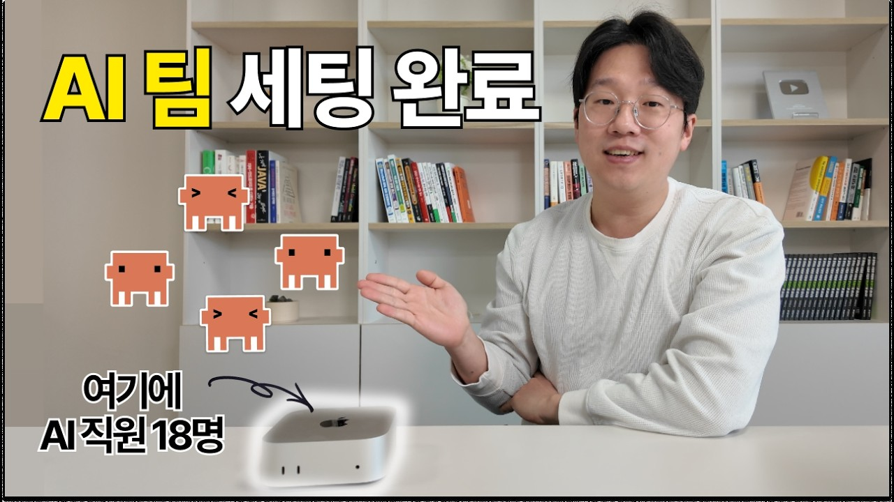
장피엠 YouTube 영상 썸네일. 28분 길이, Claude Code + OpenClau로 일상 업무를 에이전트 전환한 1인 운영 사례. 한국어 권 운영 사례 중 상위. 출처: youtube.com/watch?v=c-a4GBOxhXQ.Auto-research 패턴 은 업무와 평가 기준을 같이 주고, AI가 자기 결과물을 채점한 뒤 기준 미달이면 재제출하는 루프다. 이 패턴은 특정 도메인보다도 초안 품질을 일정 기준 이상으로 올리는 운영 방식 으로 볼 수 있다.
Cross-critique 패턴 은 한 모델의 결과물을 다른 모델에게 비판하게 하는 방식이다. 단일 self-evaluation은 자기 결과물을 좋게 평가하는 편향이 있으므로, 평가자 역할을 분리하는 것이 중요하다. 이는 본 리포트 §3.7.1의 Poor Self-evaluation 위험을 줄이는 실무 패턴이다.
유지보수 비용과 인지 과부하 도 핵심 메시지다. 자동화 파이프라인은 외부 도구·API·웹사이트 변경에 계속 영향을 받으며, 에이전트가 늘수록 사람이 검토해야 할 출력도 늘어난다. 즉 ROI 계산에는 "만드는 시간"뿐 아니라 "계속 고치는 시간"과 "검토하는 시간"이 포함되어야 한다.
5.3.2 월텍남 — Google Antigravity (조회수 206K)
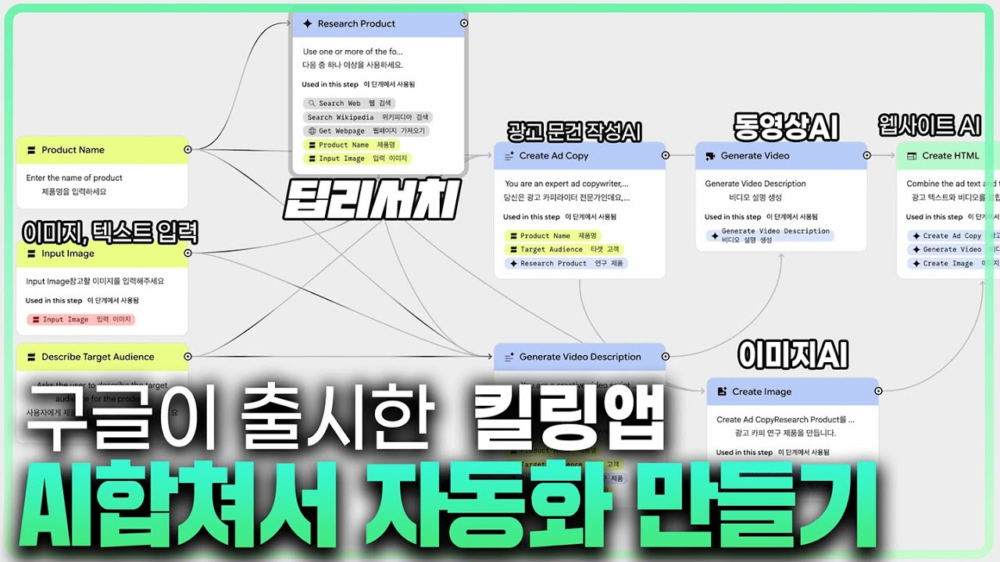
월텍남(월스트리트 테크남) YouTube 영상 썸네일. 9분 30초 길이, Google Antigravity를 활용한 업무 자동화 사례 소개. 개발자용 에이전트 플랫폼이지만, 단계별 결과물과 피드백 UI가 운영자용 자동화 제품에도 주는 시사점이 있다. 출처: youtube.com/watch?v=GzGcQzMo_Rw.이 사례에서 가져올 메시지는 시각 워크플로 + 단계별 피드백 이다. 기술자가 아닌 운영자에게는 코드형 그래프나 조직도형 거버넌스보다, 각 단계 결과물을 보고 "다시 생성 / 수정 / 승인" 할 수 있는 UI가 더 자연스러울 수 있다.
따라서 커넥트브릭 제품 관점의 질문은 하나다. 백엔드는 Paperclip처럼 조직형 거버넌스를 쓰더라도, 사용자가 보는 화면은 시각 워크플로형 이어야 하는가?
5.4 도입 순서 — 제품 적용 전에 사내 운영으로 먼저 검증
현재 기준의 안전한 권고는 Stage A: 사내 도구로 먼저 써보기 다. 본 세미나 리포트·슬라이드 제작처럼 리스크가 낮은 내부 워크플로에 Paperclip식 운영을 적용해 보고, 다음 항목을 측정한다.
- 위임·승인·검수 로그가 실제로 운영 품질을 올리는가?
- 사람이 보는 승인 큐가 감당 가능한 크기인가?
- 에이전트가 만든 결과물을 고치는 시간이 줄어드는가, 아니면 새 업무가 되는가?
- 비개발 운영자가 이해할 수 있는 화면은 조직도인가, 워크플로인가?
이 검증을 통과한 뒤에야 고객 도메인으로 확장하는 것이 안전하다. 실제 적용은 도메인 인터뷰 → 원천 자료 진단 → 채널 우선순위 확인 → 검수 정책 설계 이후의 일이다.
5.5 Q&A 토론 시드 5개
- 고객 워크플로 — 실제 고객은 콘텐츠를 어떤 순서로 만들고 승인하는가? 지금 가장 시간이 많이 드는 단계는 작성, 촬영, 검수, 발행, 성과 분석 중 무엇인가?
- 원천 자료 — 고객사가 이미 가진 사진·영상·메뉴 설명·리뷰·인터뷰 자료는 어느 정도인가? 자동화 전에 자료 정리부터 해야 하는 고객군은 얼마나 되는가?
- 검수 정책 — 사람이 반드시 봐야 하는 항목과 자동 verifier에 맡겨도 되는 항목은 어디서 갈리는가?
- 사용자 화면 — 비개발 운영자는 Paperclip식 조직도/승인 큐를 이해할 수 있는가, 아니면 n8n/Make 같은 시각 워크플로가 더 자연스러운가?
- 도입 순서 — 고객 제품에 바로 넣기 전에, 세미나·컨설팅·사내 마케팅 리포트 생산 같은 내부 워크플로로 dogfood할 수 있는가?
6. Next Step — Session 2 예고 + 컨설팅 follow-up
이 장의 한 줄 — Session 1의 메시지를 한 페이지로 압축하고, 2주 뒤 Session 2(Orchestration deep dive)까지 가져갈 숙제를 정리한다.
6.1 Session 1 인사이트 1페이지 정리
오늘 청중이 가져갈 3가지 변화 를 다시 압축한다.
| 차원 | 변화 | 근거 장 |
|---|---|---|
| 인식 (recognition) | 멀티에이전트 프레임워크는 4가지 패러다임으로 갈렸다 — 그래프형 / 역할극형 / 스킬 중심 / 조직형(organizational) | 2장 |
| 판단 (judgment) | 자사 업무가 프로젝트 산출물 + 승인 라인 + 예산 한도 구조라면 사고 모델상 조직형이 유력한 후보가 된다 (작성자 가설, 토론으로 검증) | 2.5, 5장 |
| 실행 (action) | Paperclip 로컬 인스턴스를 사내 dogfood 도구로 돌리면서 자사 제품의 거버넌스 벤치마크로 활용할지 결정 | 5.3 |
핵심 메시지 3개를 한 줄씩 다시 묶으면:
- 핵심 메시지 1 — 코디네이션이 새 병목: 능력 경쟁은 사실상 끝났다. 병목은 "여러 호출을 어떻게 조정하는가"로 이동했다.
- 핵심 메시지 2 — 프레임워크는 패러다임: 라이브러리 선택이 아니라 우리 워크플로의 모양 을 먼저 정의해야 한다.
- 핵심 메시지 3 — 거버넌스는 런타임에서 강제되어야 한다: approval queue / executionPolicy / 다차원 budget이 알림이 아니라 차단 으로 작동해야 사람이 잊어도 시스템이 막는다.
6.2 Session 2 예고 — Orchestration 구조 deep dive
Session 2의 주제는 "Agent 워크플로우와 Orchestration 구조" 다. Session 1이 패러다임을 비교하고 한 케이스를 깊이 보았다면, Session 2는 그 위에서 어떻게 워크플로를 설계할 것인가 로 한 단계 내려간다.
다룰 주제(예상, 사전 합의로 조정 가능):
- 단일 에이전트 vs 멀티 에이전트 설계 기준 — 어떤 작업을 한 에이전트가 도구 여러 개를 쓰는 형태로 둘지, 언제 역할을 쪼개 멀티 에이전트로 갈지의 판단 기준
- Agentic Design Pattern — Planning / Reflection / Tool Use / Multi-agent Collaboration (Andrew Ng, 2024) 4종 패턴의 trade-off와 구현 난이도
- 자사 업무 시나리오 기반 워크플로우 초안 진단 — 6.3의 follow-up #1을 입력으로 받아 라이브로 진단
연결고리: Session 1의 4-way 패러다임 분류는 프레임워크 선택 의 기준이었다. Session 2의 4 design pattern은 프레임워크 안에서의 구조 다. 두 축은 직교한다.
6.3 컨설팅 follow-up 아이템
청중(커넥트브릭)이 다음 2주에 가져갈 숙제다. 강제가 아니라 권장 이며, Session 2의 진단 자료로 쓰인다.
| # | 항목 | 우선순위 | 산출물 |
|---|---|---|---|
| 1 | 현재 자사 에이전트 아키텍처 1페이지 정리 — 어떤 컴포넌트가 무엇을 하고, 사람이 어디서 개입하며, 어디가 막혀 있는가 | 필수 | 1페이지 다이어그램 + 짧은 설명 |
| 2 | Paperclip 로컬 인스턴스 1대 dogfood 시작 (5.3 Stage A) | 옵션 | hello-world goal 1개 완주 |
| 3 | 고객 접점 publisher 에이전트 초안 (5.2 — Postiz 미지원 채널 대응) | 옵션 | 1~2페이지 설계 메모 |
| 4 | 검수 룰북 v0 작성 — "이런 표현/행동은 절대 안 됨" 룰 5~10개 | 옵션 | 룰북 v0 + execution policy 매핑 메모 |
필수 #1만 가져오시면 Session 2에서 진단이 가능하다. 옵션 3개는 가져오는 만큼 Session 3~4의 입력이 풍부해진다.
6.4 4세션 시리즈 전체 로드맵
4세션 시리즈는 다음 흐름으로 이어진다. Session 1에서 패러다임 비교와 Paperclip 심층 분석을 먼저 다뤘기 때문에, 이후 회차는 워크플로 설계·도구 사용·상용화 시행착오로 점점 내려간다.
| 세션 | 주제 | 일정 | 본 회차 대비 |
|---|---|---|---|
| Session 1 | AI Agent 패러다임 비교 & Paperclip 심층 (오늘) | 2026-05-28 | 비교 프레임 + Paperclip 심층 |
| Session 2 | Agent 워크플로우와 Orchestration 구조 | 2주 후 (~6/11) | 자사 워크플로 진단 라이브 |
| Session 3 | Tool Use & Context 관리 (MCP) | ~6/25 | 도구·채널 연동 아키텍처 |
| Session 4 | 상용화 시행착오 + 평가(Eval) | ~7/9 | 로깅 / 복구 / Eval 지표 |
6.5 다음 만남 전 권장 사전 작업 (선택)
청중에게: Session 2 전에 30분 안에 훑을 자료 2종을 권장한다.
- Andrew Ng, "Four design patterns for AI agentic workflows" (DeepLearning.AI Batch, 2024) — Reflection / Tool Use / Planning / Multi-agent 4패턴의 원전. 본 시리즈가 가장 자주 인용하는 분류 축.
- Anthropic, "Building effective agents" (2024-12) — 단일 vs 멀티 에이전트 의사결정의 reference.
발표자(송태영)에게: D+1 회고에서 실제 질문과 토론 포인트를 정리하고, 6.3 follow-up #1이 도착한 시점부터 Session 2 설계를 본격화한다.
참고문헌
1장 Weekly Digest
- [1]LangChain. (2026). *State of Agent Engineering 2025/2026* (n=1,340). https://www.langchain.com/state-of-agent-engineering
- [2]Paperclip AI. (2026). *paperclipai/paperclip — GitHub*. https://github.com/paperclipai/paperclip
- [3]Jimmy Song. (2026). *Paperclip: Open-Source Orchestration for Zero-Human Companies*. https://jimmysong.io/ai/paperclip/
- [4]MachineLearningMastery. (2026). *7 Agentic AI Trends to Watch in 2026*. https://machinelearningmastery.com/7-agentic-ai-trends-to-watch-in-2026/
- [5]SK AX. (2026). *2026년 기업 AI 전환의 해답, 멀티에이전트 시스템*. https://www.skax.co.kr/insight/trend/3626
- [6]pecollective. (2026). *AI Agent Frameworks Compared: LangGraph vs CrewAI vs AutoGen*. https://pecollective.com/blog/ai-agent-frameworks-compared/
- [7]Turing. (2026). *A Detailed Comparison of Top 6 AI Agent Frameworks in 2026*. https://www.turing.com/resources/ai-agent-frameworks
- [8]Digital Applied. (2026). *MCP Adoption Statistics 2026*. https://www.digitalapplied.com/blog/mcp-adoption-statistics-2026-model-context-protocol
- [9]Model Context Protocol. (2026). *The 2026 MCP Roadmap*. https://blog.modelcontextprotocol.io/posts/2026-mcp-roadmap/
- [10]MCP 관련 공개 영상 5종: NetworkChuck, *you need to learn MCP RIGHT NOW*, https://www.youtube.com/watch?v=GuTcle5edjk ; Fireship, *Claude's Model Context Protocol is here*, https://www.youtube.com/watch?v=HyzlYwjoXOQ ; Greg Isenberg, *Model Context Protocol (MCP), clearly explained*, https://www.youtube.com/watch?v=7j_NE6Pjv-E ; IBM Technology, *MCP vs API: Simplifying AI Agent Integration*, https://www.youtube.com/watch?v=7j1t3UZA1TY ; KodeKloud, *MCP Explained for Beginners*, https://www.youtube.com/watch?v=E2DEHOEbzks
- [11]Anthropic. (2025). *Equipping agents for the real world with Agent Skills*. https://www.anthropic.com/engineering/equipping-agents-for-the-real-world-with-agent-skills
- [12]VentureBeat. (2026). *Anthropic launches enterprise Agent Skills and opens the standard*. https://venturebeat.com/technology/anthropic-launches-enterprise-agent-skills-and-opens-the-standard
- [13]Anthropic. (2025). *Building agents with the Claude Agent SDK*. https://www.anthropic.com/engineering/building-agents-with-the-claude-agent-sdk
- [14]Releasebot. (2026). *Anthropic Release Notes — May 2026*. https://releasebot.io/updates/anthropic
- [15]Braintrust. (2026). *Agent Observability: The Complete Guide for 2026*. https://www.braintrust.dev/articles/agent-observability-complete-guide-2026
- [16]AgentMarketCap. (2026). *OpenTelemetry for AI Agents: The Missing Observability Standard*. https://agentmarketcap.ai/blog/2026/04/07/opentelemetry-ai-agents-observability-standard
- [17]운영·평가·비용 관련 공개 영상 4종: Nick Saraev, *AI Agents Full Course 2026*, https://www.youtube.com/watch?v=EsTrWCV0Ph4 ; LangChain, *Conceptual Guide: Multi Agent Architectures*, https://www.youtube.com/watch?v=4nZl32FwU-o ; LangChain, *Building Effective Agents with LangGraph*, https://www.youtube.com/watch?v=aHCDrAbH_go ; Burke Holland, *Agent Orchestration*, https://www.youtube.com/watch?v=-BhfcPseWFQ
- [36]Google Developers Blog. (2025-04-09). *Announcing the Agent2Agent Protocol (A2A)*. https://developers.googleblog.com/en/a2a-a-new-era-of-agent-interoperability/
- [37]Google Developers Blog. (2026-03-18). *Developer's Guide to AI Agent Protocols*. https://developers.googleblog.com/en/developers-guide-to-ai-agent-protocols/
- [38]OpenAI. (2026-04-15). *The next evolution of the Agents SDK*. https://openai.com/index/the-next-evolution-of-the-agents-sdk/
- [40]Agent Skills. (2025). *Agent Skills open standard*. https://agentskills.io/home
2장 Agent 패러다임 비교
- [18]Morphllm. (2026). *AI Agent Frameworks 2026 — 8 SDKs, ACP, Trade-offs*. https://www.morphllm.com/ai-agent-framework
- [19]Andrew Ng. (2024). *Four design patterns for AI agentic workflows*. https://x.com/AndrewYNg/status/1773393357022298617
- [41]Anthropic. (2024-12). *Building Effective Agents*. https://www.anthropic.com/engineering/building-effective-agents
- [42]LangChain. (2026). *Multi-agent systems* and *LangGraph Multi-Agent Supervisor* — https://docs.langchain.com/oss/python/langchain/multi-agent/index ; https://reference.langchain.com/python/langgraph-supervisor
- [43]LangChain. (2026). *LangGraph Swarm — Decentralized Multi-Agent Collaboration*. https://dev.to/sreeni5018/building-multi-agent-systems-with-langgraph-swarm-a-new-approach-to-agent-collaboration-15kj
- [44]Tran, K.-T., Dao, D., Nguyen, M.-D., Pham, Q.-V., O'Sullivan, B., Nguyen, H. D. (2025-01-10). *Multi-Agent Collaboration Mechanisms: A Survey of LLMs*. arXiv:2501.06322. https://arxiv.org/abs/2501.06322
3장 Paperclip 심층 분석
- [20]Paperclip AI. (2026). *paperclipai/paperclip — GitHub README*. https://github.com/paperclipai/paperclip ; Paperclip official site. https://paperclip.ing/
- [21]Paperclip docs: *Core Concepts*, https://github.com/paperclipai/paperclip/blob/master/docs/start/core-concepts.md ; *Org Structure*, https://github.com/paperclipai/paperclip/blob/master/docs/guides/board-operator/org-structure.md ; *How Delegation Works*, https://github.com/paperclipai/paperclip/blob/master/docs/guides/board-operator/delegation.md ; *Approvals*, https://github.com/paperclipai/paperclip/blob/master/docs/guides/board-operator/approvals.md ; *Costs and Budgets*, https://github.com/paperclipai/paperclip/blob/master/docs/guides/board-operator/costs-and-budgets.md ; *Execution Policy*, https://github.com/paperclipai/paperclip/blob/master/docs/guides/execution-policy.md
- [22]Nick Saraev, *AI Agents Full Course 2026*, https://www.youtube.com/watch?v=EsTrWCV0Ph4 ; LangChain, *Conceptual Guide: Multi Agent Architectures*, https://www.youtube.com/watch?v=4nZl32FwU-o ; LangChain, *Building Effective Agents with LangGraph*, https://www.youtube.com/watch?v=aHCDrAbH_go
- [23]Paperclip docs: *Execution Policy: Review & Approval Workflows*. https://github.com/paperclipai/paperclip/blob/master/docs/guides/execution-policy.md
- [24]Flowtivity. (2026). *Zero-Human Company: Paperclip AI Agent Orchestration*. https://flowtivity.ai/blog/zero-human-company-paperclip-ai-agent-orchestration/ ; MindStudio. (2026). *What is Paperclip? Zero-Human AI Company Framework*. https://www.mindstudio.ai/blog/what-is-paperclip-zero-human-ai-company-framework
4장 Live Demo Walkthrough
- [25]Paperclip AI. (2026). *paperclipai/paperclip — GitHub README*. https://github.com/paperclipai/paperclip ; Paperclip docs: *Approvals* and *Execution Policy*. https://github.com/paperclipai/paperclip/blob/master/docs/guides/board-operator/approvals.md
- [26]Nevo David / Postiz 공개 자료: *How to Automate 90% of Your Social Media Content with Claude Code and AI Agents*, https://postiz.com/blog/automate-social-media-claude-code-ai-agents ; *How I Killed AI Slop and 10x'd My SEO Traffic with Claude Code Skills*, https://postiz.com/blog/claude-code-skills-ai-slop-seo ; Postiz Agent, https://postiz.com/agent ; agent-media, https://agent-media.ai/ ; agent-media MCP, https://agent-media.ai/mcp
5장 도메인 적용 전 검증 질문
- [29]Nevo David / Postiz 공개 자료: *How to Automate 90% of Your Social Media Content with Claude Code and AI Agents*, https://postiz.com/blog/automate-social-media-claude-code-ai-agents ; *How I Killed AI Slop and 10x'd My SEO Traffic with Claude Code Skills*, https://postiz.com/blog/claude-code-skills-ai-slop-seo ; *How a Creator Built an AI Content System That Hit 5M Impressions in 2 Weeks*, https://postiz.com/blog/ai-content-system-5m-impressions
- [30]일잘러 장피엠, *나의 AI 에이전트 전환기 (Claude Code, OpenClau)*, https://www.youtube.com/watch?v=c-a4GBOxhXQ ; 월스트리트 테크남, *업무 전부 자동화 — 구글 AI 에이전트*, https://www.youtube.com/watch?v=GzGcQzMo_Rw
6장 Next Step
- [34]Andrew Ng. *Four design patterns for AI agentic workflows*. *DeepLearning.AI The Batch*, 2024.
- [35]Anthropic. *Building effective agents*. 2024-12.